87
25
112
112
00:32:27
| Title | Question | Expected | Actual | Explanation | Image SS | Skor | Status | Duration |
|---|---|---|---|---|---|---|---|---|
| Apa itu Digital Human AI? | Apa itu Digital Human AI? | Digital Human AI adalah avatar virtual/meta human berbasis kecerdasan buatan yang bisa berinteraksi seperti manusia. Ia bisa mendengar, memahami, dan menjawab dalam bentuk suara maupun teks secara real-time. | Digital Human AI adalah avatar virtual yang didukung kecerdasan buatan dan bisa berinteraksi seperti manusia. Dia bisa mendengar, memahami, dan merespons dalam bentuk suara dan teks secara real-time. | Auto: ✓ Jawaban sudah cukup lengkap mencakup poin-poin utama. Bisa ditambahkan detail tentang meta, berbasis untuk lebih komprehensif. | 0.852 | PASS | 00:00:12 | |
| Apa tujuan dari Digital Human AI? | Apa tujuan dari Digital Human AI? | Teknologi Digital Human / Meta Human dirancang untuk menghadirkan interaksi yang alami dan realistis. Selain mengolah ucapan dan bahasa, sistem ini menyesuaikan ekspresi, intonasi, dan respon secara kontekstual, sehingga pengguna merasa sedang berkomunikasi dengan manusia sungguhan, bukan hanya mesin. Pendekatan ini membuat pengalaman digital lebih mudah dipahami, personal, dan interaktif. | Tujuan dari Digital Human AI adalah untuk menghadirkan interaksi yang alami dan realistis. Teknologi ini menyesuaikan ekspresi, intonasi, dan respon secara kontekstual, sehingga pengguna merasa seperti berkomunikasi dengan manusia sungguhan, bukan hanya mesin. Ini membuat pengalaman digital lebih mudah dipahami, personal, dan interaktif. | Auto: ✓ Jawaban sudah cukup lengkap mencakup poin-poin utama. Bisa ditambahkan detail tentang meta, dirancang untuk lebih komprehensif. |
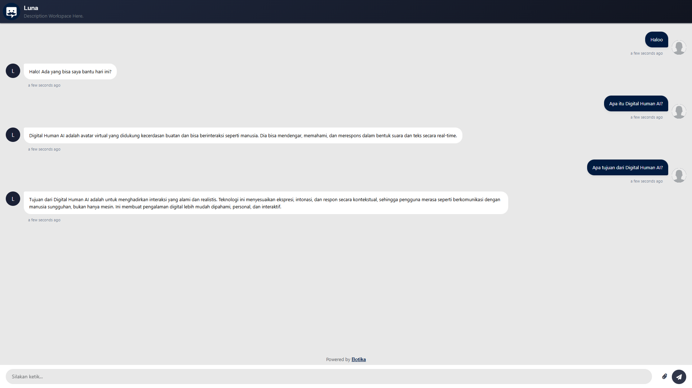 |
0.837 | PASS | 00:00:14 |
| Apa perbedaan Digital Human AI dengan chatbot berbasis teks? | Apa perbedaan Digital Human AI dengan chatbot berbasis teks? | Berbeda dengan chatbot teks yang hanya memberikan jawaban berupa tulisan, Digital Human AI menghadirkan pengalaman interaksi yang jauh lebih hidup. Sistem ini dapat menampilkan wajah virtual, suara alami, bahkan gerakan tubuh yang menyesuaikan konteks percakapan. Semua elemen ini membuat pengguna merasa sedang berbicara dengan manusia nyata, sehingga komunikasi lebih personal, mudah dipahami, dan terasa lebih alami." | Perbedaannya, Digital Human AI memberikan pengalaman interaksi yang lebih hidup dibandingkan chatbot teks. Digital Human AI menampilkan wajah virtual, suara alami, dan gerakan tubuh yang sesuai dengan konteks percakapan, sehingga terasa seperti berbicara dengan manusia nyata. Ini membuat komunikasi lebih personal, mudah dipahami, dan alami. | Auto: ✓ Jawaban sudah cukup lengkap mencakup poin-poin utama. Bisa ditambahkan detail tentang berbeda, hanya untuk lebih komprehensif. |
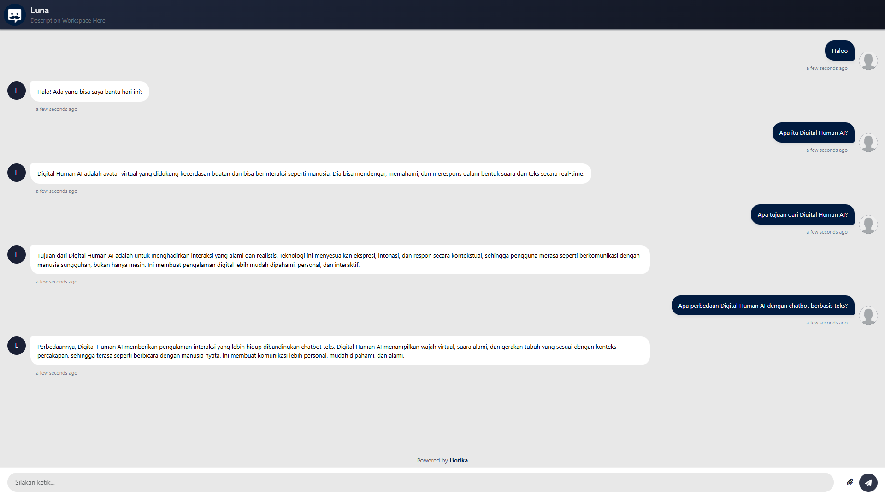 |
0.731 | PASS | 00:00:15 |
| Apa yang dimaksud dengan avatar interaktif? | Apa yang dimaksud dengan avatar interaktif? | Avatar interaktif adalah representasi digital manusia yang dapat merespons pengguna secara real-time, baik melalui wajah virtual, gerakan tubuh, maupun suara. Avatar ini mampu menyesuaikan reaksi seperti tersenyum, mengangguk, dan menggerakkan bibir sesuai suara (lip-sync), sehingga interaksi terasa lebih natural dan seolah berbicara dengan manusia nyata. | Avatar interaktif adalah representasi virtual yang bisa berinteraksi dengan pengguna secara langsung. Mirip dengan Digital Human AI, avatar ini bisa merespons input pengguna dalam bentuk teks atau suara, dan sering kali dilengkapi dengan ekspresi wajah dan gerakan tubuh untuk membuat interaksi terasa lebih nyata dan menarik. | Auto: ⚠ Jawaban hanya mencakup sebagian kecil informasi (avatar dan interaktif). Banyak informasi penting yang belum disebutkan seperti manusia, dapat, real. |
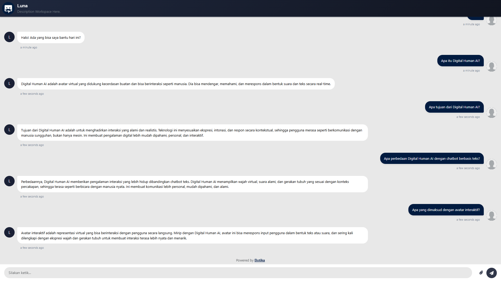 |
0.558 | FAILED | 00:00:15 |
| Apa itu real-time response dalam Digital Human AI? | Apa itu real-time response dalam Digital Human AI? | Sistem ini dirancang untuk memproses pertanyaan dan memberikan jawaban secara real-time, sehingga percakapan dapat berlangsung dengan lancar dan tanpa jeda. Respon cepat ini membantu menjaga alur interaksi tetap alami, membuat pengguna merasa sedang berbicara dengan manusia sungguhan, dan mengurangi rasa frustrasi akibat menunggu jawaban terlalu lama. | Real-time response dalam Digital Human AI adalah sistem yang memproses pertanyaan dan memberikan jawaban secara langsung tanpa jeda. Ini membuat percakapan berjalan lancar dan alami, memberikan pengalaman seolah-olah pengguna sedang berbicara dengan manusia sungguhan. | Auto: ⚠ Jawaban hanya mencakup sebagian kecil informasi (sistem dan memproses). Banyak informasi penting yang belum disebutkan seperti dirancang, untuk, sehingga. |
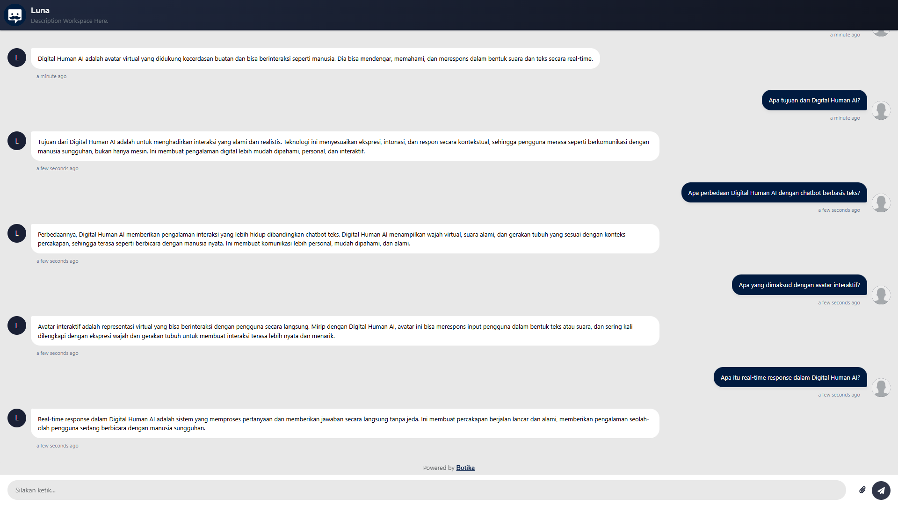 |
0.595 | FAILED | 00:00:12 |
| Apa itu komunikasi multibahasa (multilingual communication)? | Apa itu komunikasi multibahasa (multilingual communication)? | Avatar Digital Human mampu berbicara dan memahami bahasa dari berbagai negara, sehingga interaksi menjadi lebih mudah dan natural bagi audiens internasional. Kemampuan ini memungkinkan komunikasi yang personal dan inklusif, memudahkan perusahaan menjangkau pengguna global tanpa hambatan bahasa, sekaligus menjaga pengalaman percakapan tetap hidup dan interaktif. | Komunikasi multibahasa memungkinkan Avatar Digital Human berbicara dan memahami berbagai bahasa. Ini memudahkan interaksi dengan audiens internasional, membuat komunikasi lebih personal dan inklusif, serta memudahkan perusahaan menjangkau pengguna global tanpa hambatan bahasa. | Auto: ⚠ Jawaban sudah benar untuk bagian avatar dan digital, tapi masih kurang lengkap. Perlu ditambahkan informasi tentang mampu, dari, negara. |
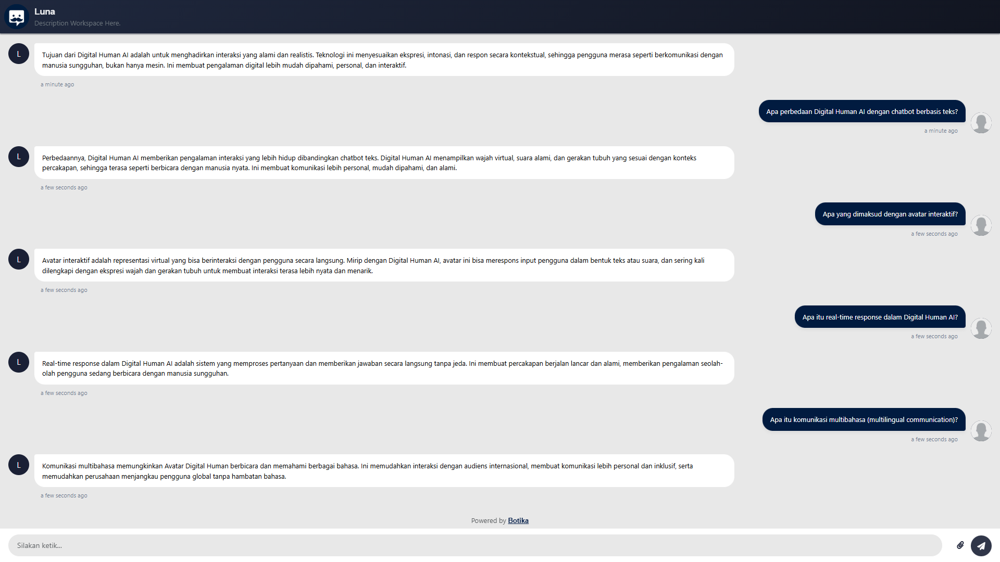 |
0.6 | FAILED | 00:00:13 |
| Apa yang dimaksud dengan Speech-to-Text (STT) pada DHAI? | Apa yang dimaksud dengan Speech-to-Text (STT) pada DHAI? | Dalam Digital Human AI, teknologi Speech-to-Text (STT) mengubah ucapan pengguna menjadi teks secara real-time. Misalnya, ketika Anda mengatakan “Cek tagihan listrik”, avatar Digital Human akan mengenali suara Anda, menuliskannya, dan memproses perintah tersebut untuk memberikan jawaban atau tindakan yang tepat. STT membuat interaksi dengan DHAI terasa lebih alami, cepat, dan tanpa perlu mengetik, sehingga percakapan menjadi lebih lancar dan human-like. | Dalam Digital Human AI (DHAI), teknologi Speech-to-Text (STT) mengubah ucapan pengguna menjadi teks secara real-time. Misalnya, ketika Anda mengatakan "Cek tagihan listrik", avatar Digital Human akan mengenali suara Anda, menuliskannya, dan memproses perintah tersebut untuk memberikan jawaban atau tindakan yang tepat. STT membuat interaksi dengan DHAI terasa lebih alami dan cepat tanpa perlu mengetik, sehingga percakapan menjadi lebih lancar dan human-like. | Auto: ✓ Jawaban sudah sangat baik dan lengkap. Semua informasi penting yang diharapkan sudah tercakup dengan akurat. |
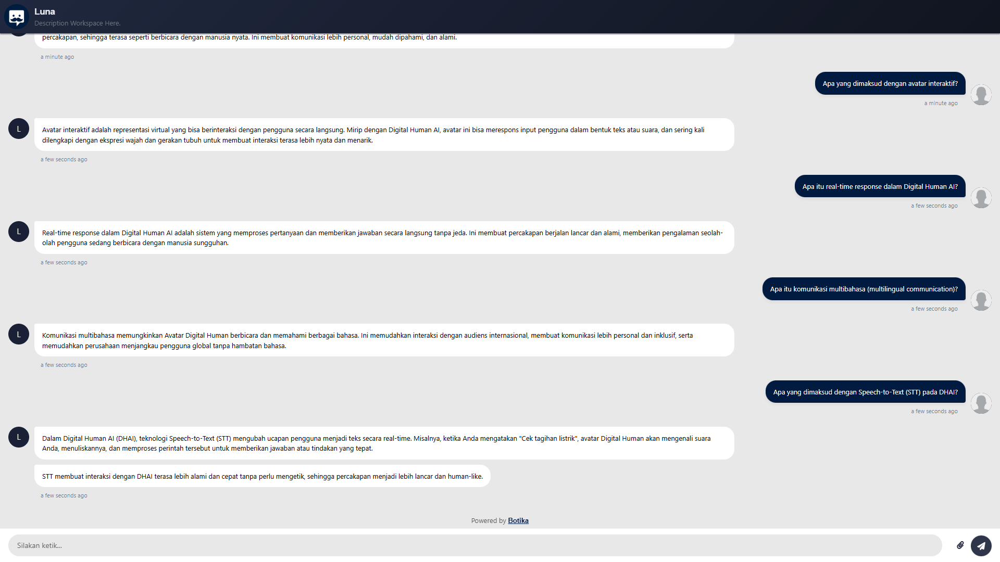 |
1 | PASS | 00:00:16 |
| Apa yang dimaksud dengan Text-to-Speech (TTS) pada DHAI? | Apa yang dimaksud dengan Text-to-Speech (TTS) pada DHAI? | Teknologi Text-to-Speech (TTS) dalam Digital Human AI mengubah teks jawaban menjadi suara yang terdengar alami, sehingga avatar dapat 'berbicara' layaknya manusia. Suara ini dapat disesuaikan dengan intonasi, kecepatan bicara, dan gaya bahasa, membuat percakapan terasa lebih hidup, personal, dan mudah dipahami oleh pengguna.. | Teknologi Text-to-Speech (TTS) dalam Digital Human AI mengubah teks jawaban menjadi suara yang terdengar alami, sehingga avatar dapat 'berbicara' layaknya manusia. Suara ini dapat disesuaikan dengan intonasi, kecepatan bicara, dan gaya bahasa, membuat percakapan terasa lebih hidup, personal, dan mudah dipahami oleh pengguna. | Auto: ✓ Jawaban sudah sangat baik dan lengkap. Semua informasi penting yang diharapkan sudah tercakup dengan akurat. |
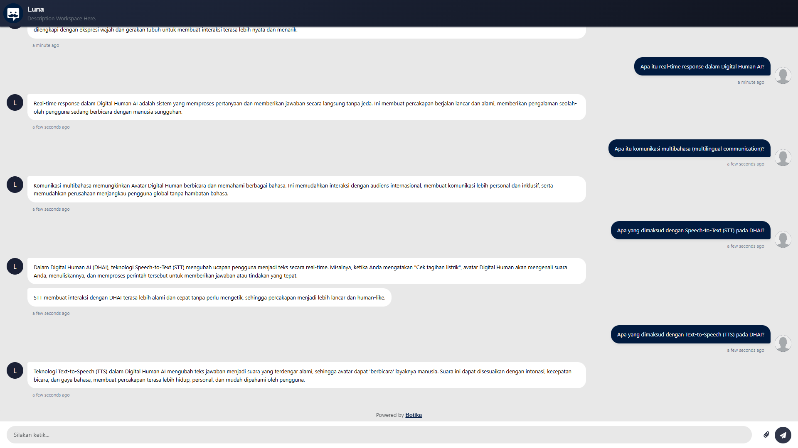 |
1 | PASS | 00:00:14 |
| Bagaimana Digital Human AI terintegrasi dengan API? | Bagaimana Digital Human AI terintegrasi dengan API? | Digital Human AI dapat terintegrasi dengan sistem lain melalui API, seperti database pelanggan, aplikasi layanan publik, atau sistem internal perusahaan. Integrasi ini memungkinkan avatar untuk mengakses informasi secara real-time, memberikan jawaban yang akurat, dan menindaklanjuti permintaan pengguna secara langsung. Dengan koneksi ini, interaksi DHAI menjadi lebih personal, efisien, dan relevan sesuai kebutuhan setiap pengguna. | Digital Human AI dapat terintegrasi dengan sistem lain melalui API, seperti database pelanggan, aplikasi layanan publik, atau sistem internal perusahaan. Integrasi ini memungkinkan avatar untuk mengakses informasi secara real-time, memberikan jawaban yang akurat, dan menindaklanjuti permintaan pengguna secara langsung. Dengan koneksi ini, interaksi DHAI menjadi lebih personal, efisien, dan relevan sesuai kebutuhan setiap pengguna. | Auto: ✓ Jawaban sudah sangat baik dan lengkap. Semua informasi penting yang diharapkan sudah tercakup dengan akurat. |
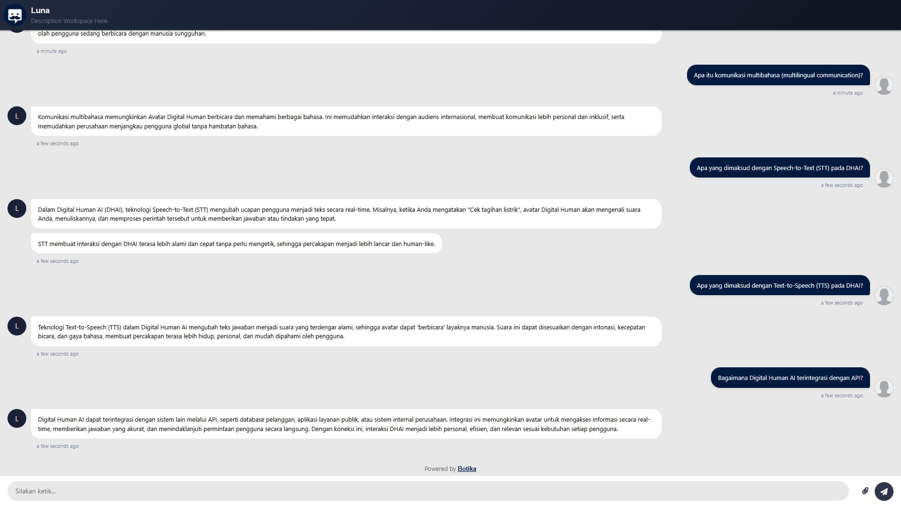 |
1 | PASS | 00:00:16 |
| Apa yang dimaksud dengan LLM Integration pada DHAI? | Apa yang dimaksud dengan LLM Integration pada DHAI? | Dengan dukungan Large Language Models (LLM), avatar Digital Human dapat memahami konteks percakapan dengan lebih mendalam, mengenali maksud pengguna, dan menyesuaikan jawaban secara cerdas. Teknologi ini memungkinkan avatar memberikan respon yang relevan, alami, dan fleksibel, sehingga interaksi terasa seperti berbicara dengan manusia yang benar-benar mengerti situasi dan kebutuhan pengguna. | Dengan dukungan Large Language Models (LLM), avatar Digital Human dapat memahami konteks percakapan dengan lebih mendalam, mengenali maksud pengguna, dan menyesuaikan jawaban secara cerdas. Teknologi ini memungkinkan avatar memberikan respon yang relevan, alami, dan fleksibel, sehingga interaksi terasa seperti berbicara dengan manusia yang benar-benar mengerti situasi dan kebutuhan pengguna. | Auto: ✓ Jawaban sudah sangat baik dan lengkap. Semua informasi penting yang diharapkan sudah tercakup dengan akurat. |
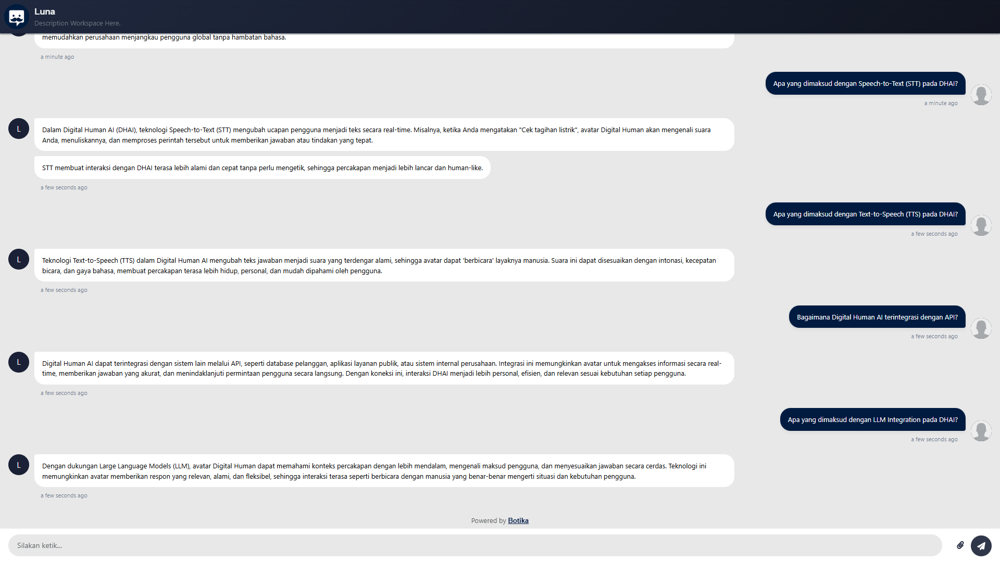 |
1 | PASS | 00:00:14 |
| Platform apa saja yang kompatibel dengan Digital Human AI? | Platform apa saja yang kompatibel dengan Digital Human AI? | Avatar Digital Human dapat dihadirkan di berbagai platform, mulai dari website, aplikasi mobile, mesin kiosk, hingga layar LCD interaktif. Fleksibilitas ini memungkinkan perusahaan menghadirkan pengalaman interaktif yang konsisten di berbagai kanal, sehingga pengguna dapat berkomunikasi dengan avatar secara mudah dan natural di mana pun mereka berada. | Digital Human AI bisa diintegrasikan dengan berbagai platform, seperti aplikasi layanan publik, sistem internal perusahaan, dan database pelanggan, melalui API. Ini membuat DHAI fleksibel untuk digunakan di banyak lingkungan, dari bisnis hingga layanan publik, agar interaksi dengan pengguna menjadi lebih efisien dan personal. | Auto: ✗ Jawaban tidak cukup relevan dengan yang diharapkan. Sebagian besar informasi penting seperti avatar, dapat, website tidak disebutkan. |
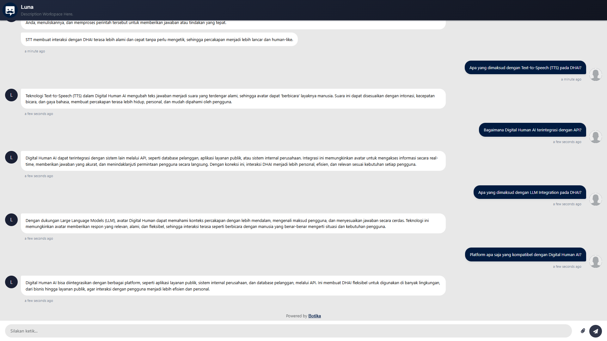 |
0.385 | FAILED | 00:00:15 |
| Apa yang dimaksud dengan easy embedding? | Apa yang dimaksud dengan easy embedding? | Proses integrasi avatar Digital Human relatif mudah. Untuk website atau aplikasi, biasanya cukup menambahkan skrip atau kode singkat yang disediakan, dan avatar sudah bisa tampil serta berinteraksi dengan pengguna. Pendekatan ini mempermudah perusahaan menghadirkan pengalaman interaktif tanpa perlu melakukan perubahan besar pada sistem yang sudah ada. | Easy embedding adalah proses integrasi avatar Digital Human yang relatif mudah. Untuk website atau aplikasi, biasanya cukup menambahkan skrip atau kode singkat yang disediakan, dan avatar sudah bisa tampil serta berinteraksi dengan pengguna. Pendekatan ini mempermudah perusahaan untuk menghadirkan pengalaman interaktif tanpa perlu melakukan perubahan besar pada sistem yang sudah ada. | Auto: ✓ Jawaban sudah sangat baik dan lengkap. Semua informasi penting yang diharapkan sudah tercakup dengan akurat. |
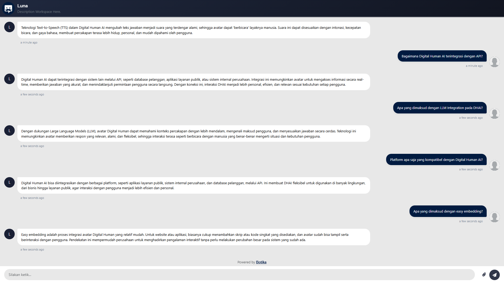 |
1 | PASS | 00:00:15 |
| Apa saja keunggulan utama Digital Human AI? | Apa saja keunggulan utama Digital Human AI? | Digital Human AI punya beberapa keunggulan, seperti bisa merespons dengan cepat, mendukung percakapan dalam banyak bahasa, mampu memahami suara sekaligus berbicara kembali, serta mudah dipasang dan digunakan. Teknologi ini juga bisa dihubungkan dengan sistem lain sehingga lebih fleksibel untuk berbagai kebutuhan. | Digital Human AI punya beberapa keunggulan, seperti dapat merespons dengan cepat, mendukung percakapan dalam banyak bahasa, mampu memahami suara sekaligus berbicara kembali, serta mudah dipasang dan digunakan. Selain itu, teknologi ini bisa dihubungkan dengan sistem lain sehingga lebih fleksibel untuk berbagai kebutuhan. | Auto: ✓ Jawaban sudah sangat baik dan lengkap. Semua informasi penting yang diharapkan sudah tercakup dengan akurat. |
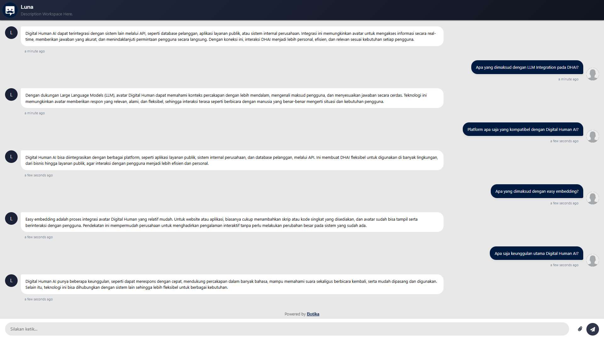 |
0.974 | PASS | 00:00:15 |
| Bagaimana pengalaman pengguna (user experience) dengan Digital Human AI? | Bagaimana pengalaman pengguna (user experience) dengan Digital Human AI? | Karena avatar Digital Human menampilkan wajah dan ekspresi yang menyerupai manusia, pengguna merasa lebih nyaman dan percaya diri saat berinteraksi. Tampilan yang natural ini membantu menciptakan suasana percakapan yang lebih hangat, personal, dan mudah diterima, sehingga komunikasi dengan sistem digital terasa lebih alami. | Pengalaman pengguna dengan Digital Human AI biasanya sangat positif karena avatar ini menampilkan wajah dan ekspresi yang menyerupai manusia. Hal ini membuat pengguna merasa lebih nyaman dan percaya diri saat berinteraksi. Tampilan natural dari DHAI membantu menciptakan suasana percakapan yang lebih hangat, personal, dan mudah diterima, sehingga komunikasi dengan sistem digital terasa lebih alami. | Auto: ✓ Jawaban sudah sangat baik dan lengkap. Semua informasi penting yang diharapkan sudah tercakup dengan akurat. |
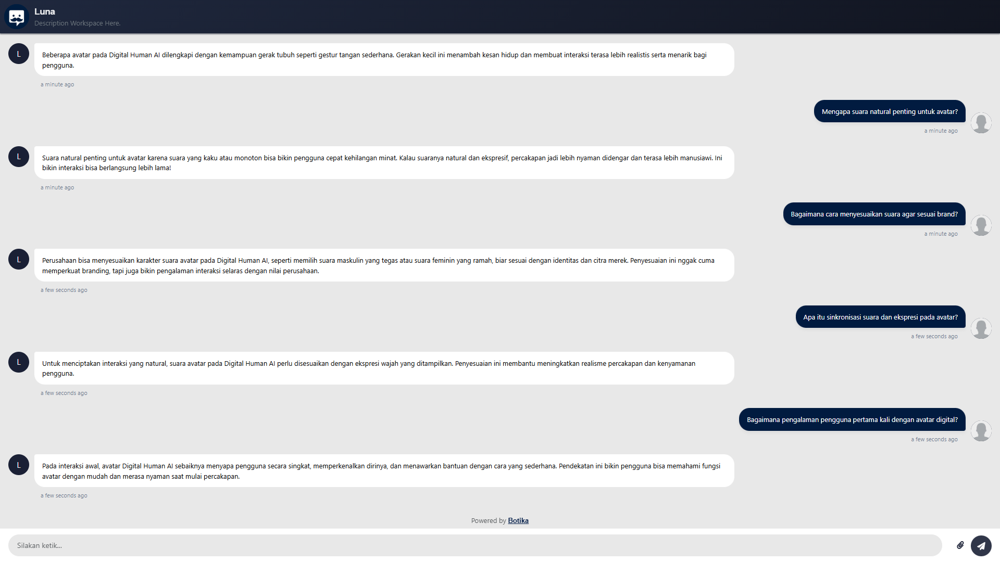 |
1 | PASS | 00:00:17 |
| Bagaimana Digital Human AI mendukung aksesibilitas? | Bagaimana Digital Human AI mendukung aksesibilitas? | Avatar Digital Human memudahkan pengguna yang lebih nyaman berbicara daripada mengetik, sehingga interaksi menjadi lebih cepat dan natural. Selain itu, avatar juga sangat bermanfaat untuk pengguna tunanetra, karena jawaban dapat disuarakan melalui Text-to-Speech, memungkinkan mereka mengakses informasi dengan mudah tanpa hambatan visual. | Digital Human AI memudahkan aksesibilitas dengan memungkinkan pengguna yang lebih nyaman berbicara daripada mengetik untuk berinteraksi dengan lebih cepat dan natural. Avatar ini juga sangat bermanfaat untuk pengguna tunanetra, karena jawaban dapat disuarakan melalui Text-to-Speech, memungkinkan mereka mengakses informasi dengan mudah tanpa hambatan visual. | Auto: ✓ Jawaban sudah sangat baik dan lengkap. Semua informasi penting yang diharapkan sudah tercakup dengan akurat. |
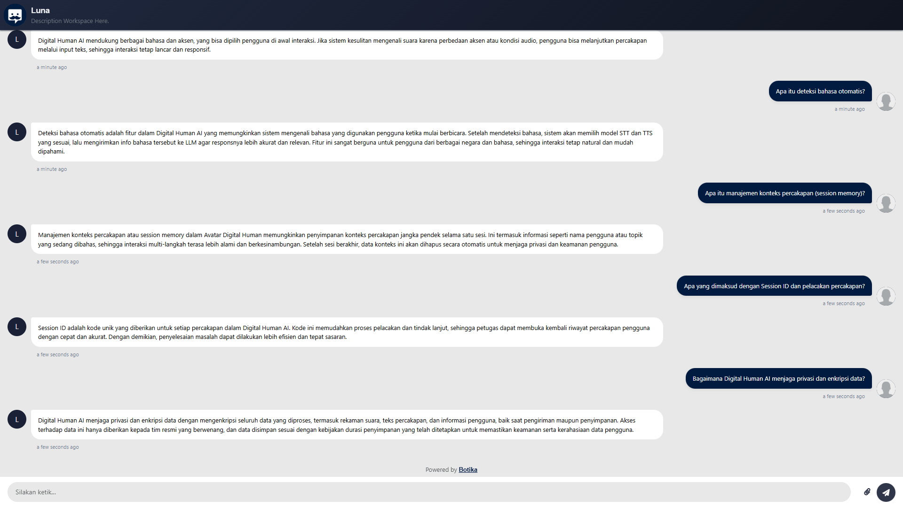 |
0.951 | PASS | 00:00:15 |
| Apa yang dimaksud dengan personalisasi (personalization) dalam avatar digital? | Apa yang dimaksud dengan personalisasi (personalization) dalam avatar digital? | Avatar Digital Human dapat dikustomisasi sesuai identitas perusahaan. Anda bisa mengatur gaya bicara—formal atau santai, memilih suara pria atau wanita, serta menyesuaikan tampilan visual agar selaras dengan brand. Kustomisasi ini membuat interaksi dengan avatar terasa konsisten dengan citra perusahaan, sekaligus menghadirkan pengalaman yang lebih personal dan profesional bagi pengguna. | Personalisasi dalam avatar digital berarti Anda dapat mengkustomisasi avatar sesuai identitas perusahaan. Misalnya, mengatur gaya bicara, memilih suara pria atau wanita, dan menyesuaikan tampilan visual agar selaras dengan brand. Ini membuat interaksi dengan avatar terasa konsisten dengan citra perusahaan, serta menghadirkan pengalaman yang lebih personal dan profesional bagi pengguna. | Auto: ✓ Jawaban sudah cukup lengkap mencakup poin-poin utama. Bisa ditambahkan detail tentang human, dikustomisasi untuk lebih komprehensif. |
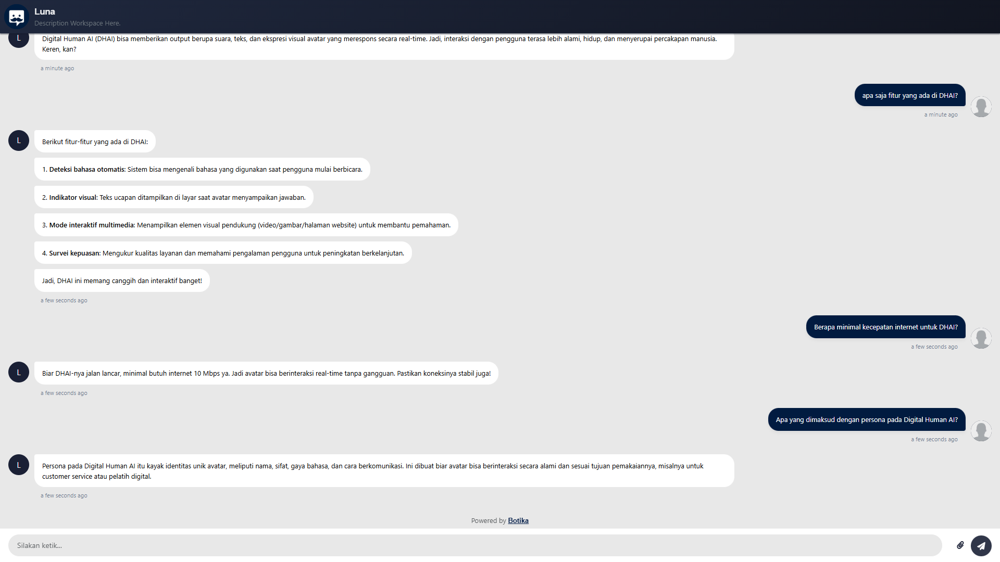 |
0.875 | PASS | 00:00:17 |
| Bagaimana Digital Human AI digunakan untuk customer service? | Bagaimana Digital Human AI digunakan untuk customer service? | Digital Human AI dibekali dengan sistem RAG (Retrieval-Augmented Generation) atau Knowledge Base (KB) yang berisi seluruh informasi dan pengetahuan yang biasanya dimiliki oleh tim customer service. Dengan dukungan ini, avatar dapat memberikan jawaban yang akurat, relevan, dan kontekstual terkait layanan yang disediakan perusahaan, sehingga pengalaman pengguna menjadi lebih informatif dan efisien. | Digital Human AI digunakan dalam customer service dengan memanfaatkan sistem RAG (Retrieval-Augmented Generation) atau Knowledge Base (KB) yang berisi semua informasi yang biasanya dimiliki oleh tim customer service. Dengan dukungan ini, avatar dapat memberikan jawaban yang akurat, relevan, dan kontekstual terkait layanan yang disediakan perusahaan. Hal ini membuat pengalaman pengguna lebih informatif dan efisien. | Auto: ✓ Jawaban sudah cukup lengkap mencakup poin-poin utama. Bisa ditambahkan detail tentang dibekali, seluruh untuk lebih komprehensif. |
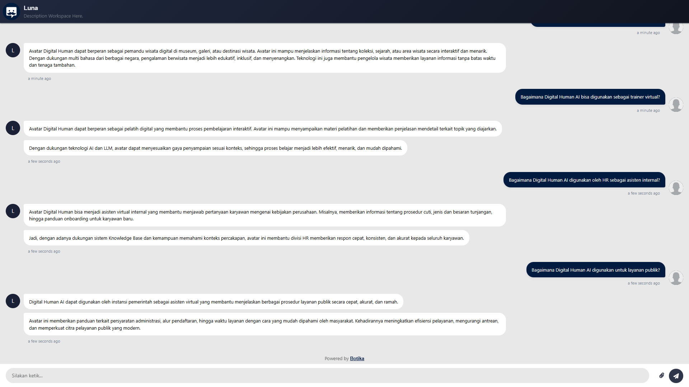 |
0.886 | PASS | 00:00:18 |
| Bagaimana peran Digital Human AI sebagai healthcare assistant? | Bagaimana peran Digital Human AI sebagai healthcare assistant? | Di lingkungan rumah sakit atau klinik, avatar Digital Human dapat berperan sebagai asisten virtual yang membantu pasien dan pengunjung. Avatar ini dapat memberikan informasi jadwal praktik dokter, prosedur pendaftaran pasien baru maupun lama, hingga edukasi kesehatan seperti tips pencegahan penyakit atau panduan perawatan setelah tindakan medis. Dengan kemampuan berinteraksi secara natural, avatar membantu mempercepat layanan, mengurangi antrean di meja informasi, dan meningkatkan kenyamanan pasien dalam mengakses informasi. | Di lingkungan rumah sakit atau klinik, Digital Human AI berperan sebagai asisten virtual yang membantu pasien dan pengunjung. Avatar ini memberikan informasi tentang jadwal praktik dokter, prosedur pendaftaran pasien, dan edukasi kesehatan seperti tips pencegahan penyakit atau panduan perawatan setelah tindakan medis. Dengan interaksi yang natural, avatar ini membantu mempercepat layanan, mengurangi antrean, dan meningkatkan kenyamanan pasien dalam mengakses informasi. | Auto: ✓ Jawaban sudah cukup lengkap mencakup poin-poin utama. Bisa ditambahkan detail tentang dapat, dapat untuk lebih komprehensif. |
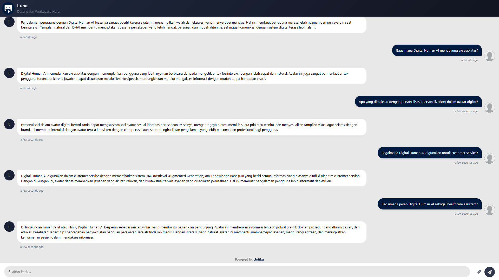 |
0.855 | PASS | 00:00:16 |
| Bagaimana Digital Human AI digunakan dalam layanan perbankan digital? | Bagaimana Digital Human AI digunakan dalam layanan perbankan digital? | Dalam sektor perbankan, avatar Digital Human dapat berfungsi sebagai asisten virtual yang membantu nasabah memahami berbagai layanan perbankan digital. Avatar ini mampu memberikan penjelasan tentang fitur transaksi online, cara penggunaan aplikasi perbankan, hingga panduan keamanan digital seperti verifikasi dua langkah atau cara menghindari penipuan online. Dengan interaksi yang natural dan mudah dipahami, avatar membantu meningkatkan literasi digital nasabah sekaligus memperkuat kepercayaan terhadap layanan bank. | Dalam layanan perbankan digital, Digital Human AI berfungsi sebagai asisten virtual yang membantu nasabah memahami berbagai layanan perbankan. Avatar ini dapat menjelaskan fitur transaksi online, cara penggunaan aplikasi perbankan, dan memberikan panduan keamanan digital seperti verifikasi dua langkah atau cara menghindari penipuan online. Dengan interaksi yang natural dan mudah dipahami, avatar ini membantu meningkatkan literasi digital nasabah dan memperkuat kepercayaan terhadap layanan bank. | Auto: ✓ Jawaban sudah sangat baik dan lengkap. Semua informasi penting yang diharapkan sudah tercakup dengan akurat. | 0.902 | PASS | 00:00:26 | |
| Bagaimana Digital Human AI berperan sebagai advertising presenter? | Bagaimana Digital Human AI berperan sebagai advertising presenter? | Avatar Digital Human dapat digunakan dalam iklan digital untuk menyampaikan informasi produk atau layanan secara interaktif. Dengan kemampuan berbicara menggunakan suara alami dan gestur yang menarik, avatar mampu menjelaskan produk dengan cara yang lebih hidup, persuasif, dan mudah dipahami. Pendekatan ini membantu menarik perhatian audiens, memperkuat citra brand, serta meningkatkan keterlibatan (engagement) dalam kampanye pemasaran digital. | Avatar Digital Human dapat digunakan dalam iklan digital untuk menyampaikan informasi produk atau layanan secara interaktif. Dengan kemampuan berbicara menggunakan suara alami dan gestur menarik, avatar mampu menjelaskan produk dengan cara yang lebih hidup, persuasif, dan mudah dipahami. Pendekatan ini membantu menarik perhatian audiens, memperkuat citra brand, dan meningkatkan keterlibatan dalam kampanye pemasaran digital. | Auto: ✓ Jawaban sudah sangat baik dan lengkap. Semua informasi penting yang diharapkan sudah tercakup dengan akurat. |
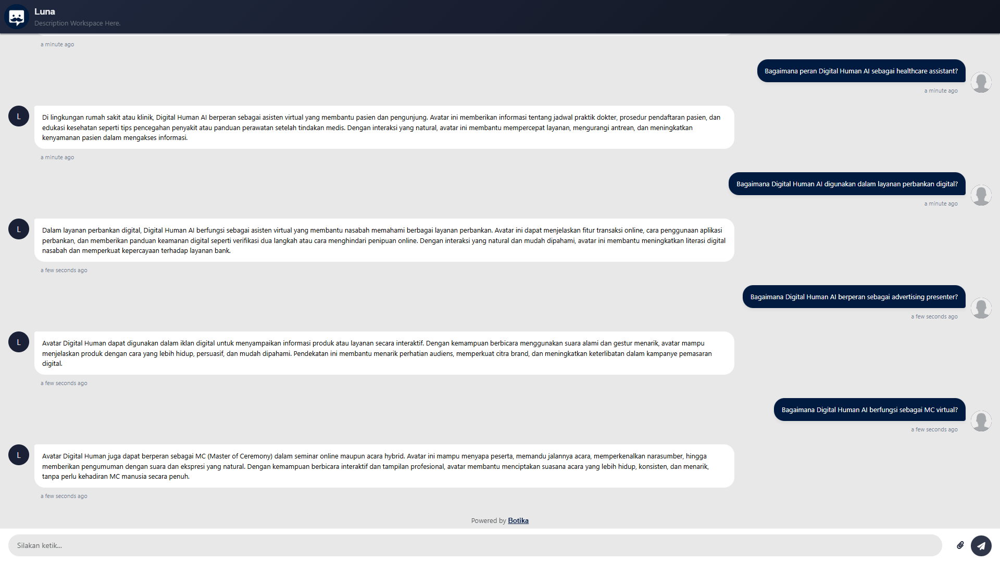 |
0.962 | PASS | 00:00:18 |
| Bagaimana Digital Human AI berfungsi sebagai MC virtual? | Bagaimana Digital Human AI berfungsi sebagai MC virtual? | Avatar Digital Human juga dapat berperan sebagai MC (Master of Ceremony) dalam seminar online maupun acara hybrid. Avatar ini mampu menyapa peserta, memandu jalannya acara, memperkenalkan narasumber, hingga memberikan pengumuman dengan suara dan ekspresi yang natural. Dengan kemampuan berbicara interaktif dan tampilan profesional, avatar membantu menciptakan suasana acara yang lebih hidup, konsisten, dan menarik, tanpa perlu kehadiran MC manusia secara penuh. | Avatar Digital Human juga dapat berperan sebagai MC (Master of Ceremony) dalam seminar online maupun acara hybrid. Avatar ini mampu menyapa peserta, memandu jalannya acara, memperkenalkan narasumber, hingga memberikan pengumuman dengan suara dan ekspresi yang natural. Dengan kemampuan berbicara interaktif dan tampilan profesional, avatar membantu menciptakan suasana acara yang lebih hidup, konsisten, dan menarik, tanpa perlu kehadiran MC manusia secara penuh. | Auto: ✓ Jawaban sudah sangat baik dan lengkap. Semua informasi penting yang diharapkan sudah tercakup dengan akurat. | 1 | PASS | 00:00:17 | |
| Bagaimana Digital Human AI digunakan sebagai tour guide? | Bagaimana Digital Human AI digunakan sebagai tour guide? | Avatar Digital Human dapat berperan sebagai pemandu wisata digital di museum, galeri, atau destinasi wisata. Avatar ini mampu menjelaskan informasi tentang koleksi, sejarah, atau area wisata secara interaktif dan menarik. Dengan dukungan multi bahasa dari berbagai negara, sehingga pengalaman berwisata menjadi lebih edukatif, inklusif, dan menyenangkan. Teknologi ini juga membantu pengelola wisata memberikan layanan informasi tanpa batas waktu dan tenaga tambahan. | Avatar Digital Human dapat berperan sebagai pemandu wisata digital di museum, galeri, atau destinasi wisata. Avatar ini mampu menjelaskan informasi tentang koleksi, sejarah, atau area wisata secara interaktif dan menarik. Dengan dukungan multi bahasa dari berbagai negara, pengalaman berwisata menjadi lebih edukatif, inklusif, dan menyenangkan. Teknologi ini juga membantu pengelola wisata memberikan layanan informasi tanpa batas waktu dan tenaga tambahan. | Auto: ✓ Jawaban sudah sangat baik dan lengkap. Semua informasi penting yang diharapkan sudah tercakup dengan akurat. | 0.982 | PASS | 00:00:16 | |
| Bagaimana Digital Human AI bisa digunakan sebagai trainer virtual? | Bagaimana Digital Human AI bisa digunakan sebagai trainer virtual? | Avatar Digital Human dapat berperan sebagai pelatih digital (digital trainer) yang membantu proses pembelajaran interaktif. Avatar ini mampu menyampaikan materi pelatihan dan memberikan penjelasan mendetail terkait topik yang diajarkan. Dengan dukungan teknologi AI dan LLM, avatar dapat menyesuaikan gaya penyampaian sesuai konteks, sehingga proses belajar menjadi lebih efektif, menarik, dan mudah dipahami. | Avatar Digital Human dapat berperan sebagai pelatih digital yang membantu proses pembelajaran interaktif. Avatar ini mampu menyampaikan materi pelatihan dan memberikan penjelasan mendetail terkait topik yang diajarkan. Dengan dukungan teknologi AI dan LLM, avatar dapat menyesuaikan gaya penyampaian sesuai konteks, sehingga proses belajar menjadi lebih efektif, menarik, dan mudah dipahami. | Auto: ✓ Jawaban sudah sangat baik dan lengkap. Semua informasi penting yang diharapkan sudah tercakup dengan akurat. |
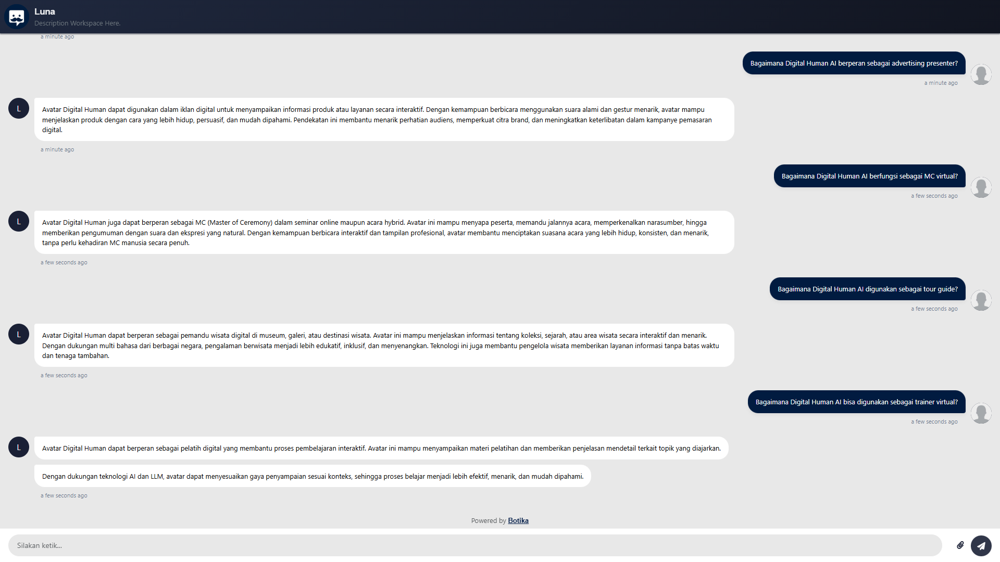 |
1 | PASS | 00:00:37 |
| Bagaimana Digital Human AI digunakan oleh HR sebagai asisten internal? | Bagaimana Digital Human AI digunakan oleh HR sebagai asisten internal? | Avatar Digital Human dapat digunakan sebagai asisten virtual internal yang membantu menjawab pertanyaan karyawan terkait kebijakan perusahaan. Avatar ini mampu memberikan informasi tentang prosedur cuti, jenis dan besaran tunjangan, hingga panduan onboarding untuk karyawan baru. Dengan dukungan sistem Knowledge Base dan kemampuan memahami konteks percakapan, avatar membantu divisi HR dalam memberikan respon cepat, konsisten, dan akurat kepada seluruh karyawan. | Avatar Digital Human bisa menjadi asisten virtual internal yang membantu menjawab pertanyaan karyawan mengenai kebijakan perusahaan. Misalnya, memberikan informasi tentang prosedur cuti, jenis dan besaran tunjangan, hingga panduan onboarding untuk karyawan baru. Jadi, dengan adanya dukungan sistem Knowledge Base dan kemampuan memahami konteks percakapan, avatar ini membantu divisi HR memberikan respon cepat, konsisten, dan akurat kepada seluruh karyawan. | Auto: ✓ Jawaban sudah sangat baik dan lengkap. Semua informasi penting yang diharapkan sudah tercakup dengan akurat. | 0.907 | PASS | 00:00:16 | |
| Bagaimana Digital Human AI digunakan untuk layanan publik? | Bagaimana Digital Human AI digunakan untuk layanan publik? | Avatar Digital Human dapat dimanfaatkan oleh instansi pemerintah sebagai asisten virtual yang menjelaskan berbagai prosedur layanan publik secara cepat, akurat, dan ramah. Avatar ini mampu memberikan panduan terkait persyaratan administrasi, alur pendaftaran, hingga waktu layanan, dengan cara penyampaian yang mudah dipahami oleh masyarakat. Kehadiran avatar membantu meningkatkan efisiensi pelayanan, mengurangi antrean di loket informasi, serta memperkuat citra pelayanan publik yang modern dan responsif. | Digital Human AI dapat digunakan oleh instansi pemerintah sebagai asisten virtual yang membantu menjelaskan berbagai prosedur layanan publik secara cepat, akurat, dan ramah. Avatar ini memberikan panduan terkait persyaratan administrasi, alur pendaftaran, hingga waktu layanan dengan cara yang mudah dipahami oleh masyarakat. Kehadirannya meningkatkan efisiensi pelayanan, mengurangi antrean, dan memperkuat citra pelayanan publik yang modern. | Auto: ✓ Jawaban sudah cukup lengkap mencakup poin-poin utama. Bisa ditambahkan detail tentang dimanfaatkan, mampu untuk lebih komprehensif. | 0.898 | PASS | 00:00:37 | |
| Bagaimana cara kerja Speech-to-Text (STT) secara sederhana pada DHAI? | Bagaimana cara kerja Speech-to-Text (STT) secara sederhana pada DHAI? | Dalam Digital Human AI, teknologi Speech-to-Text (STT) berfungsi untuk mengenali ucapan pengguna melalui mikrofon dan mengubahnya menjadi teks yang dapat dipahami sistem. Prosesnya dimulai dari penerimaan suara, pengubahan gelombang suara menjadi potongan fonem, hingga penentuan kata yang paling sesuai dengan konteks percakapan. Hasil teks ini kemudian digunakan oleh DHAI untuk memahami maksud pertanyaan pengguna dan memberikan respon yang relevan. Kualitas pengenalan suara sangat dipengaruhi oleh kebersihan audio (noise), kualitas mikrofon, serta model bahasa yang digunakan oleh sistem. | Dalam Digital Human AI, teknologi Speech-to-Text (STT) mengenali ucapan pengguna melalui mikrofon dan mengubahnya menjadi teks. Prosesnya dimulai dengan menerima suara, mengubah gelombang suara menjadi potongan fonem, dan menentukan kata yang sesuai dengan konteks percakapan. Teks ini digunakan oleh DHAI untuk memahami maksud pertanyaan pengguna dan memberikan respons yang relevan. Kualitas pengenalan suara dipengaruhi oleh kebersihan audio, kualitas mikrofon, dan model bahasa yang digunakan. | Auto: ✓ Jawaban sudah cukup lengkap mencakup poin-poin utama. Bisa ditambahkan detail tentang berfungsi, dapat untuk lebih komprehensif. |
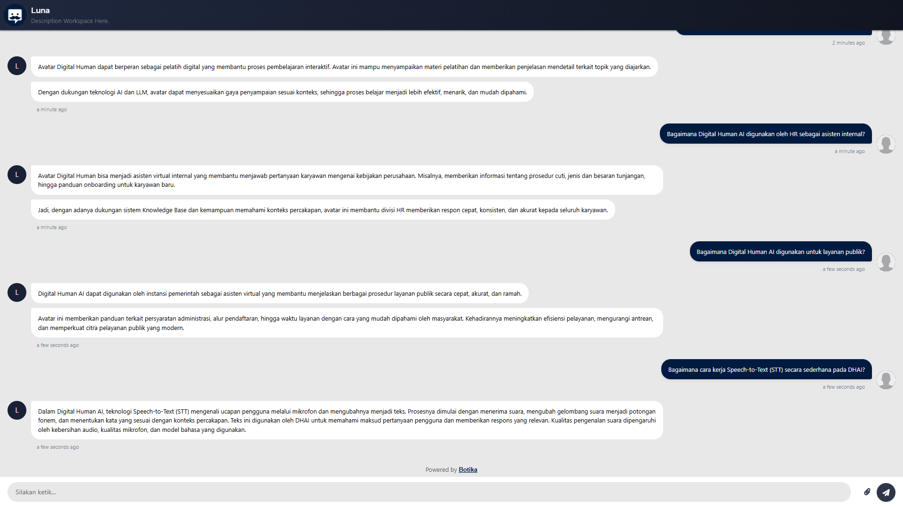 |
0.781 | PASS | 00:00:18 |
| Faktor apa saja yang memengaruhi akurasi STT pada DHAI? | Faktor apa saja yang memengaruhi akurasi STT pada DHAI? | Dalam penggunaan Digital Human AI, akurasi pengenalan suara bisa menurun jika lingkungan terlalu bising, suara pengguna terlalu pelan atau terlalu cepat, atau terdapat logat yang belum dikenali sistem. Untuk hasil terbaik, disarankan berbicara dengan jelas, berada cukup dekat dengan mikrofon, dan jika masih belum terbaca dengan baik, pengguna dapat beralih menggunakan fitur ketik. | Akurasi pengenalan suara pada Digital Human AI bisa dipengaruhi oleh beberapa faktor, seperti lingkungan yang terlalu bising, suara pengguna yang terlalu pelan atau cepat, dan logat yang belum dikenali sistem. Untuk hasil terbaik, disarankan berbicara dengan jelas, dekat dengan mikrofon, dan jika masih belum terbaca, bisa menggunakan fitur ketik. | Auto: ✓ Jawaban sudah cukup lengkap mencakup poin-poin utama. Bisa ditambahkan detail tentang dalam, menurun untuk lebih komprehensif. |
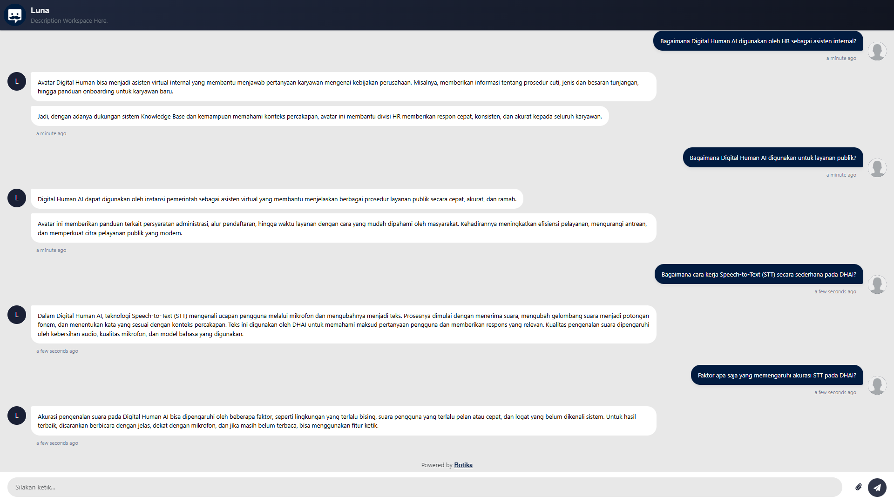 |
0.863 | PASS | 00:00:16 |
| Bagaimana cara kerja Text-to-Speech (TTS) secara sederhana pada DHAI? | Bagaimana cara kerja Text-to-Speech (TTS) secara sederhana pada DHAI? | Dalam Digital Human AI, teknologi Text-to-Speech (TTS) berfungsi membaca teks jawaban dan mengubahnya menjadi gelombang suara. Sistem ini menambahkan intonasi, jeda, dan pengucapan alami agar suara terdengar seperti manusia berbicara, sehingga interaksi dengan avatar terasa lebih hidup dan natural. | Dalam Digital Human AI, teknologi Text-to-Speech (TTS) berfungsi untuk membaca teks jawaban dan mengubahnya menjadi gelombang suara. Sistem ini menambahkan intonasi, jeda, dan pengucapan agar suara terdengar seperti manusia berbicara, sehingga interaksi dengan avatar terasa lebih hidup dan natural. | Auto: ✓ Jawaban sudah sangat baik dan lengkap. Semua informasi penting yang diharapkan sudah tercakup dengan akurat. |
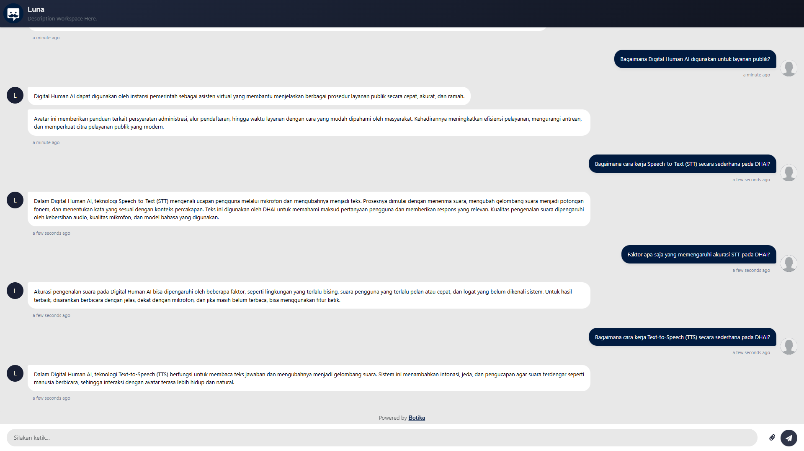 |
0.971 | PASS | 00:00:26 |
| Kapan sebaiknya memilih atau mengganti suara TTS (voice) pada DHAI? | Kapan sebaiknya memilih atau mengganti suara TTS (voice) pada DHAI? | Digital Human AI menyediakan berbagai pilihan suara, seperti pria atau wanita, dengan beragam usia dan aksen. Suara dapat disesuaikan dengan kebutuhan konteks. misalnya, suara formal untuk layanan resmi, santai untuk promosi, atau aksen lokal agar terasa lebih dekat dan familiar bagi pengguna. | Memilih atau mengganti suara TTS pada Digital Human AI bisa dilakukan sesuai kebutuhan konteks. Misalnya, gunakan suara formal untuk layanan resmi, suara santai untuk promosi, atau aksen lokal agar terasa lebih dekat dan familiar bagi pengguna. Anda bisa memilih suara pria atau wanita, dengan beragam usia dan aksen. | Auto: ✓ Jawaban sudah cukup lengkap mencakup poin-poin utama. Bisa ditambahkan detail tentang menyediakan, pilihan untuk lebih komprehensif. |
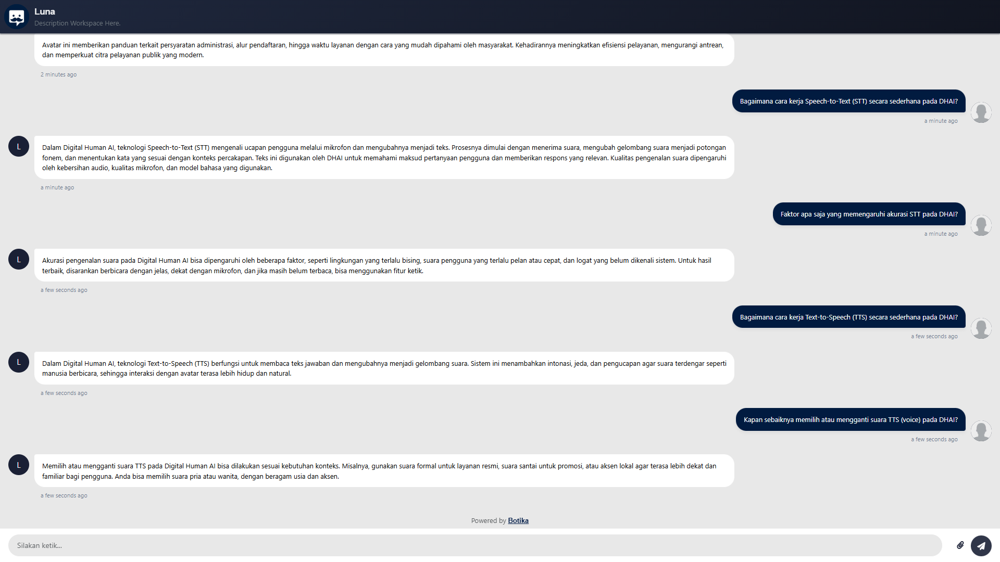 |
0.897 | PASS | 00:00:16 |
| Bagaimana cara menyesuaikan intonasi dan kecepatan bicara TTS pada DHAI? | Bagaimana cara menyesuaikan intonasi dan kecepatan bicara TTS pada DHAI? | Dalam Digital Human AI, Anda dapat mengatur kecepatan bicara dan intonasi suara agar pesan lebih mudah dipahami. Untuk menyampaikan informasi penting, disarankan menggunakan kecepatan yang lebih pelan dan memberikan jeda antar kalimat, sehingga pengguna dapat menangkap isi pesan dengan lebih jelas dan nyaman. | Anda bisa mengatur kecepatan bicara dan intonasi suara dalam Digital Human AI agar pesan lebih mudah dipahami. Untuk informasi penting, gunakan kecepatan lebih pelan dan berikan jeda antar kalimat supaya pengguna dapat menangkap isi pesan dengan lebih jelas dan nyaman. | Auto: ✓ Jawaban sudah sangat baik dan lengkap. Semua informasi penting yang diharapkan sudah tercakup dengan akurat. |
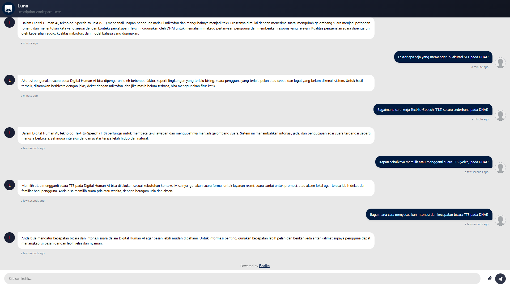 |
0.921 | PASS | 00:00:14 |
| Apa itu sinkronisasi bibir (lip-sync) dasar? | Apa itu sinkronisasi bibir (lip-sync) dasar? | Dalam Digital Human AI, sistem menyelaraskan suara dengan gerakan mulut avatar (lip-sync) agar tampak nyata saat berbicara. Hasilnya akan terlihat lebih natural jika suara yang digunakan jernih dan animasi avatar telah diatur dengan presisi, sehingga pengalaman interaksi terasa seperti berbicara dengan manusia sesungguhnya. | Dalam Digital Human AI, sinkronisasi bibir (lip-sync) adalah proses menyelaraskan suara dengan gerakan mulut avatar agar terlihat nyata saat berbicara. Hasilnya akan lebih natural jika suara yang digunakan jernih dan animasi avatar diatur dengan presisi, membuat pengalaman interaksi seperti berbicara dengan manusia sesungguhnya. | Auto: ✓ Jawaban sudah cukup lengkap mencakup poin-poin utama. Bisa ditambahkan detail tentang sistem, tampak untuk lebih komprehensif. |
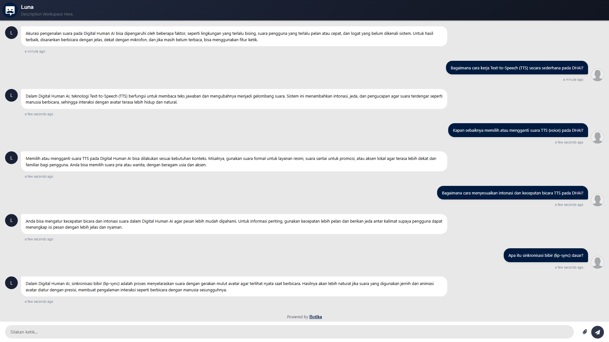 |
0.878 | PASS | 00:00:18 |
| Bagaimana sistem menangani aksen dan dialek pengguna? | Bagaimana sistem menangani aksen dan dialek pengguna? | Digital Human AI mendukung berbagai bahasa dan aksen, yang dapat dipilih pengguna di awal interaksi. Jika sistem kesulitan mengenali suara karena perbedaan aksen atau kondisi audio, pengguna dapat melanjutkan percakapan melalui input teks, sehingga interaksi tetap lancar dan responsif. | Digital Human AI mendukung berbagai bahasa dan aksen, yang bisa dipilih pengguna di awal interaksi. Jika sistem kesulitan mengenali suara karena perbedaan aksen atau kondisi audio, pengguna bisa melanjutkan percakapan melalui input teks, sehingga interaksi tetap lancar dan responsif. | Auto: ✓ Jawaban sudah sangat baik dan lengkap. Semua informasi penting yang diharapkan sudah tercakup dengan akurat. |
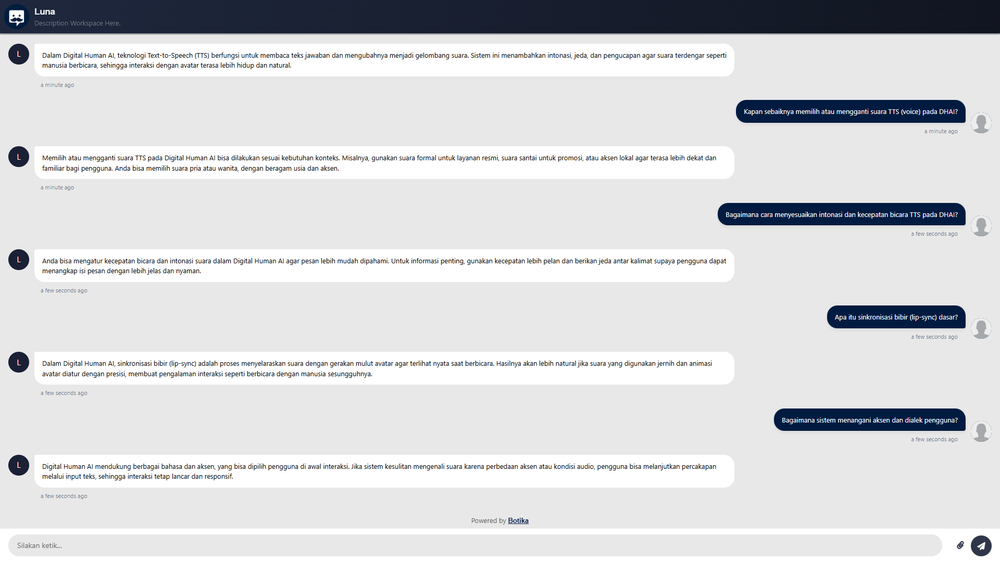 |
0.943 | PASS | 00:00:14 |
| Apa itu deteksi bahasa otomatis? | Apa itu deteksi bahasa otomatis? | Fitur ini memungkinkan Digital Human AI secara otomatis mengenali bahasa yang digunakan pengguna saat mulai berbicara. Setelah bahasa terdeteksi, sistem akan memilih model STT dan TTS yang sesuai, lalu mengirimkan informasi bahasa tersebut ke LLM agar respons yang dihasilkan lebih akurat dan relevan. Kemampuan ini sangat bermanfaat untuk layanan yang digunakan oleh pengguna dari berbagai negara dan bahasa, memastikan pengalaman interaksi tetap natural dan mudah dipahami. | Deteksi bahasa otomatis adalah fitur dalam Digital Human AI yang memungkinkan sistem mengenali bahasa yang digunakan pengguna ketika mulai berbicara. Setelah mendeteksi bahasa, sistem akan memilih model STT dan TTS yang sesuai, lalu mengirimkan info bahasa tersebut ke LLM agar responsnya lebih akurat dan relevan. Fitur ini sangat berguna untuk pengguna dari berbagai negara dan bahasa, sehingga interaksi tetap natural dan mudah dipahami. | Auto: ✓ Jawaban sudah cukup lengkap mencakup poin-poin utama. Bisa ditambahkan detail tentang secara, saat untuk lebih komprehensif. |
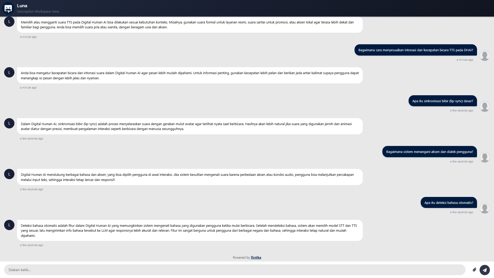 |
0.855 | PASS | 00:00:18 |
| Apa itu manajemen konteks percakapan (session memory)? | Apa itu manajemen konteks percakapan (session memory)? | Avatar Digital Human mampu menyimpan konteks percakapan jangka pendek selama satu sesi, seperti nama pengguna atau topik yang sedang dibahas, agar interaksi multi-langkah terasa lebih alami dan berkesinambungan. Setelah sesi berakhir, data konteks ini akan dihapus secara otomatis untuk menjaga privasi dan keamanan pengguna. | Manajemen konteks percakapan atau session memory dalam Avatar Digital Human memungkinkan penyimpanan konteks percakapan jangka pendek selama satu sesi. Ini termasuk informasi seperti nama pengguna atau topik yang sedang dibahas, sehingga interaksi multi-langkah terasa lebih alami dan berkesinambungan. Setelah sesi berakhir, data konteks ini akan dihapus secara otomatis untuk menjaga privasi dan keamanan pengguna. | Auto: ✓ Jawaban sudah sangat baik dan lengkap. Semua informasi penting yang diharapkan sudah tercakup dengan akurat. |
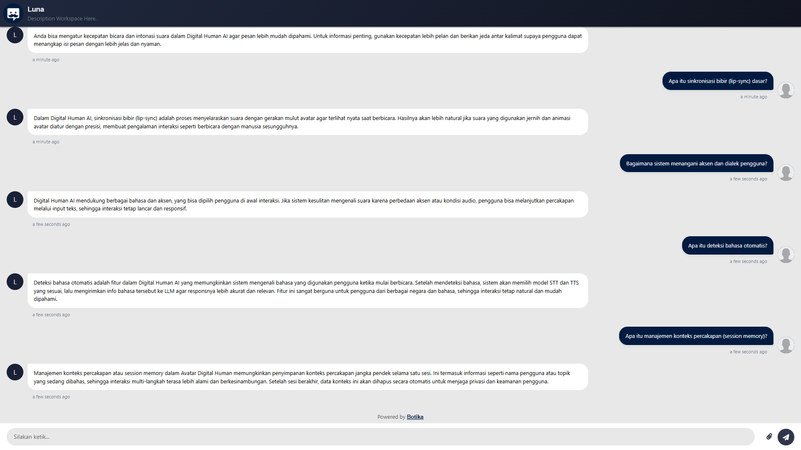 |
0.929 | PASS | 00:00:18 |
| Apa yang dimaksud dengan Session ID dan pelacakan percakapan? | Apa yang dimaksud dengan Session ID dan pelacakan percakapan? | Setiap percakapan dalam Digital Human AI memiliki kode unik yang berfungsi untuk memudahkan proses pelacakan dan tindak lanjut. Dengan kode ini, petugas dapat membuka kembali riwayat percakapan pengguna secara cepat dan akurat, sehingga penyelesaian masalah dapat dilakukan dengan lebih efisien dan tepat sasaran. | Session ID adalah kode unik yang diberikan untuk setiap percakapan dalam Digital Human AI. Kode ini memudahkan proses pelacakan dan tindak lanjut, sehingga petugas dapat membuka kembali riwayat percakapan pengguna dengan cepat dan akurat. Dengan demikian, penyelesaian masalah dapat dilakukan lebih efisien dan tepat sasaran. | Auto: ✓ Jawaban sudah sangat baik dan lengkap. Semua informasi penting yang diharapkan sudah tercakup dengan akurat. |
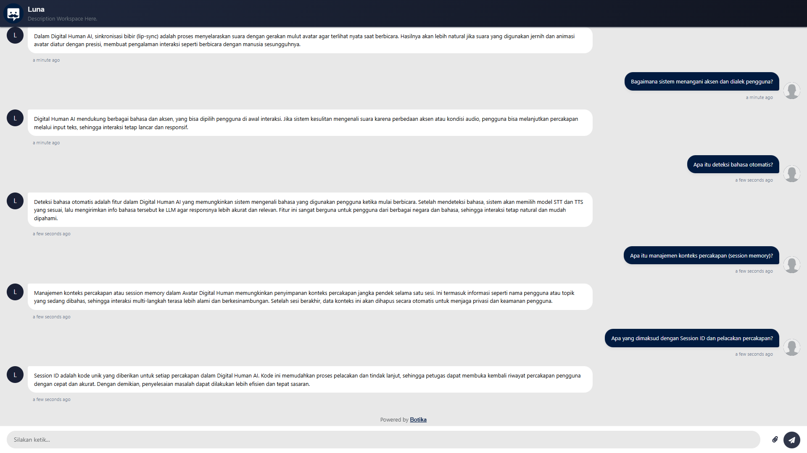 |
0.921 | PASS | 00:00:15 |
| Bagaimana Digital Human AI menjaga privasi dan enkripsi data? | Bagaimana Digital Human AI menjaga privasi dan enkripsi data? | Seluruh data yang diproses oleh Digital Human AI, termasuk rekaman suara, teks percakapan, serta informasi pengguna, dienkripsi baik saat pengiriman maupun penyimpanan. Akses terhadap data ini hanya diberikan kepada tim resmi yang berwenang, dan penyimpanannya mengikuti kebijakan durasi penyimpanan yang telah ditetapkan untuk menjaga keamanan serta kerahasiaan data pengguna. | Digital Human AI menjaga privasi dan enkripsi data dengan mengenkripsi seluruh data yang diproses, termasuk rekaman suara, teks percakapan, dan informasi pengguna, baik saat pengiriman maupun penyimpanan. Akses terhadap data ini hanya diberikan kepada tim resmi yang berwenang, dan data disimpan sesuai dengan kebijakan durasi penyimpanan yang telah ditetapkan untuk memastikan keamanan serta kerahasiaan data pengguna. | Auto: ✓ Jawaban sudah sangat baik dan lengkap. Semua informasi penting yang diharapkan sudah tercakup dengan akurat. | 0.956 | PASS | 00:00:27 | |
| Apa itu kebijakan penyimpanan dan penghapusan data? | Apa itu kebijakan penyimpanan dan penghapusan data? | "Rekaman suara dan transkrip percakapan pada sistem Digital Human AI disimpan untuk keperluan pemantauan kualitas dan peningkatan layanan. Setelah melewati periode tersebut, data akan dihapus secara otomatis. Pengguna juga memiliki hak untuk meminta penghapusan data lebih awal melalui mekanisme resmi yang disediakan oleh tim DHAI. | Rekaman suara dan transkrip percakapan di sistem Digital Human AI disimpan untuk pemantauan kualitas dan peningkatan layanan. Setelah periode tertentu, data akan dihapus secara otomatis. Pengguna juga bisa meminta penghapusan data lebih awal melalui mekanisme resmi yang disediakan oleh tim DHAI. | Auto: ✓ Jawaban sudah cukup lengkap mencakup poin-poin utama. Bisa ditambahkan detail tentang pada, keperluan untuk lebih komprehensif. |
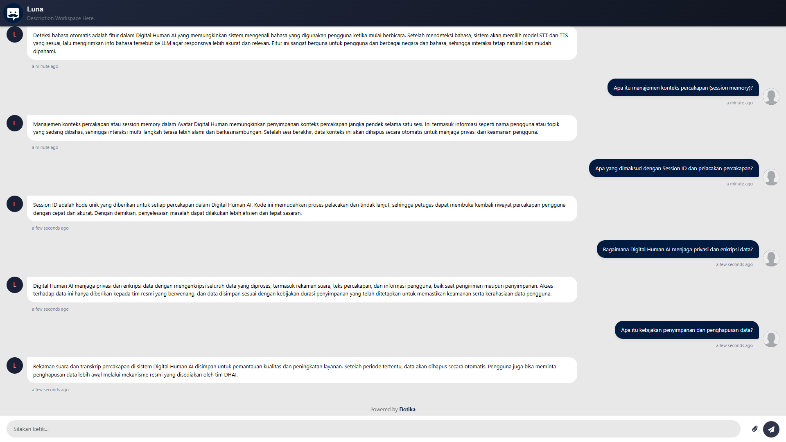 |
0.875 | PASS | 00:00:14 |
| Bagaimana strategi fallback jika STT atau LLM gagal pada DHAI? | Bagaimana strategi fallback jika STT atau LLM gagal pada DHAI? | Apabila sistem Speech-to-Text (STT) pada Digital Human AI mengalami kendala dalam mengenali suara pengguna, sistem akan memberikan opsi untuk melanjutkan interaksi melalui pengetikan manual. Jika model LLM menghasilkan respons yang kurang relevan, avatar akan meminta klarifikasi tambahan atau menampilkan beberapa opsi jawaban agar percakapan tetap berjalan lancar. | Kalau sistem Speech-to-Text (STT) di Digital Human AI mengalami kendala dalam mengenali suara, sistem bakal kasih opsi buat melanjutkan interaksi lewat pengetikan manual. Kalau model LLM ngasih respons yang kurang relevan, avatarnya bakal minta klarifikasi tambahan atau kasih beberapa opsi jawaban biar percakapan tetap lancar. | Auto: ✓ Jawaban sudah cukup lengkap mencakup poin-poin utama. Bisa ditambahkan detail tentang apabila, pada untuk lebih komprehensif. |
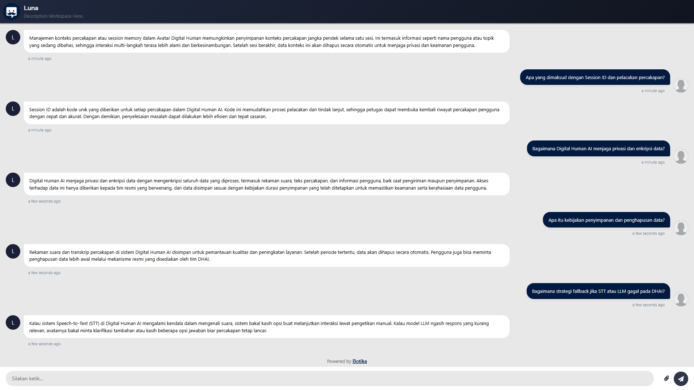 |
0.711 | PASS | 00:00:16 |
| Kapan percakapan harus dialihkan ke agen manusia (human-in-the-loop)? | Kapan percakapan harus dialihkan ke agen manusia (human-in-the-loop)? | Percakapan akan dialihkan ke agen manusia bila sistem mendeteksi kondisi tertentu, seperti saat pengguna meminta langsung berbicara dengan petugas, muncul kata kunci sensitif, atau ketika LLM memberikan respons yang tidak pasti. Saat dialihkan, sistem akan menyertakan ringkasan transkrip singkat agar agen dapat memahami konteks percakapan dengan cepat dan memberikan bantuan yang tepat. | Percakapan harus dialihkan ke agen manusia kalau sistem mendeteksi kondisi tertentu, seperti saat pengguna minta langsung bicara dengan petugas, ada kata kunci sensitif, atau kalau LLM ngasih respons yang gak pasti. Saat dialihkan, sistem bakal kasih ringkasan transkrip singkat supaya agen cepat paham konteks percakapan dan bisa bantu dengan tepat. | Auto: ✓ Jawaban sudah cukup lengkap mencakup poin-poin utama. Bisa ditambahkan detail tentang akan, bila untuk lebih komprehensif. |
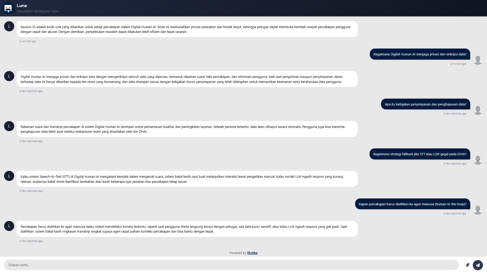 |
0.776 | PASS | 00:00:20 |
| Bagaimana contoh sederhana integrasi Digital Human AI dengan CRM? | Bagaimana contoh sederhana integrasi Digital Human AI dengan CRM? | Saat pengguna menanyakan status pesanan dan menyertakan nomor pelanggan, avatar Digital Human AI akan mengirimkan permintaan ke sistem CRM melalui integrasi API. Sistem CRM kemudian memproses permintaan tersebut dan mengembalikan data seperti status serta tanggal pesanan. Informasi tersebut langsung disampaikan oleh avatar kepada pengguna secara interaktif. Proses pertukaran data ini umumnya menggunakan autentikasi dan format standar seperti JSON untuk memastikan komunikasi antar sistem berlangsung aman dan terstruktur. | Saat pengguna nanya status pesanan dan sertakan nomor pelanggan, avatar Digital Human AI bakal kirim permintaan ke sistem CRM lewat integrasi API. Sistem CRM bakal proses permintaan itu dan kasih balik data kayak status dan tanggal pesanan. Info ini langsung disampaikan avatar ke pengguna secara interaktif. Proses ini pakai autentikasi dan format standar kayak JSON biar komunikasi antar sistem aman dan terstruktur. | Auto: ✓ Jawaban sudah cukup lengkap mencakup poin-poin utama. Bisa ditambahkan detail tentang menyertakan, mengirimkan untuk lebih komprehensif. |
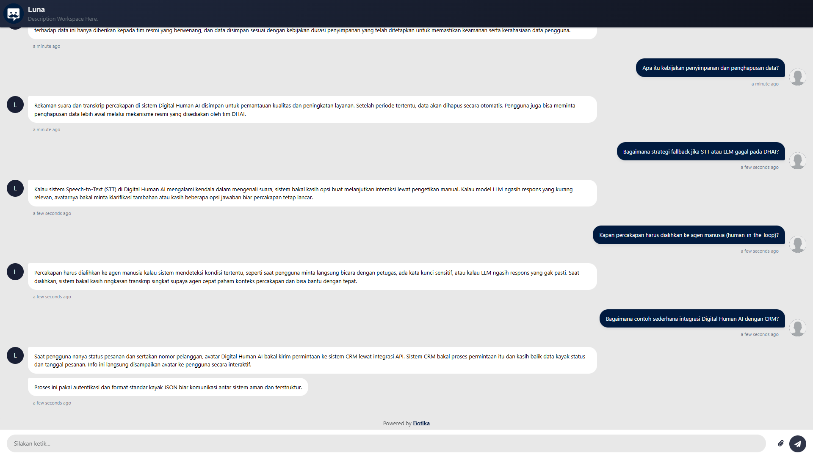 |
0.772 | PASS | 00:00:34 |
| Apa langkah singkat untuk melakukan web embed? | Apa langkah singkat untuk melakukan web embed? | Untuk mengintegrasikan avatar Digital Human AI ke dalam website, Anda cukup menyalin kode yang tersedia di dashboard, kemudian menempelkannya pada halaman situs yang diinginkan. Setelah itu, lakukan pengaturan dasar seperti penyesuaian ID bot dan pilihan bahasa sesuai kebutuhan. Sebelum ditayangkan ke publik, disarankan untuk melakukan uji coba terlebih dahulu guna memastikan avatar berfungsi dengan baik dan tampil sesuai harapan. | Untuk integrasi avatar Digital Human AI ke dalam website, Anda cuma perlu salin kode dari dashboard, terus tempel di halaman situs yang Anda mau. Lalu, atur ID bot dan pilihan bahasa sesuai kebutuhan. Jangan lupa, sebelum ditayangkan, uji coba dulu biar avatar berfungsi dan tampil sesuai harapan. | Auto: ⚠ Jawaban sudah benar untuk bagian untuk dan mengintegrasikan, tapi masih kurang lengkap. Perlu ditambahkan informasi tentang cukup, menyalin, menempelkannya. |
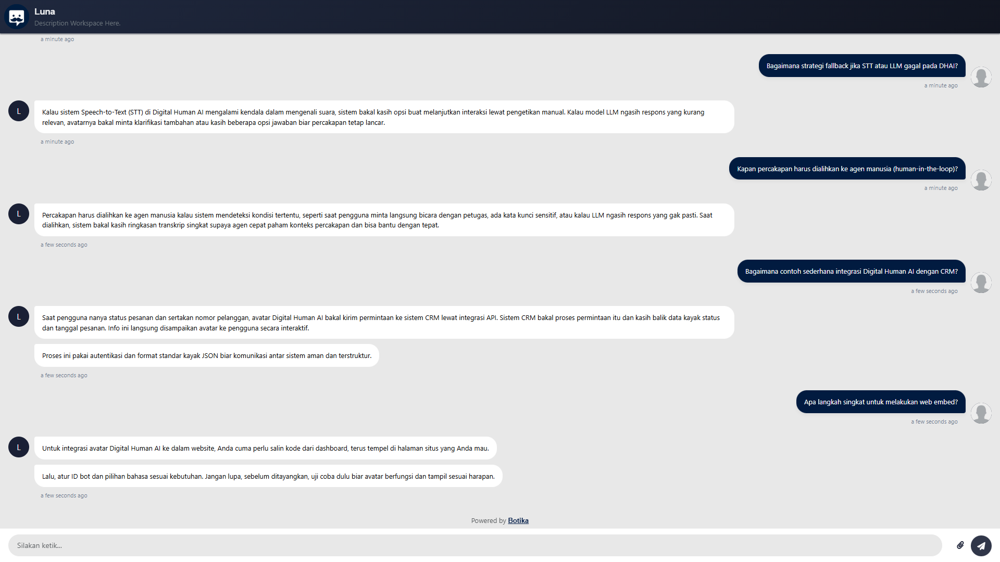 |
0.694 | FAILED | 00:00:37 |
| Apa perbedaan integrasi web dengan native app? | Apa perbedaan integrasi web dengan native app? | Versi web Digital Human AI lebih cepat dan praktis karena dapat langsung digunakan di berbagai situs tanpa memerlukan proses instalasi. Sementara itu, versi aplikasi lebih direkomendasikan apabila Anda menginginkan pengalaman interaksi yang lebih lengkap, stabil, serta teroptimasi untuk perangkat tertentu. | Versi web Digital Human AI lebih cepat dan praktis karena bisa langsung dipakai di berbagai situs tanpa perlu instalasi. Sedangkan, versi aplikasi lebih direkomendasikan kalau Anda mau pengalaman interaksi yang lebih lengkap, stabil, dan teroptimasi buat perangkat tertentu. | Auto: ✓ Jawaban sudah cukup lengkap mencakup poin-poin utama. Bisa ditambahkan detail tentang dapat, memerlukan untuk lebih komprehensif. |
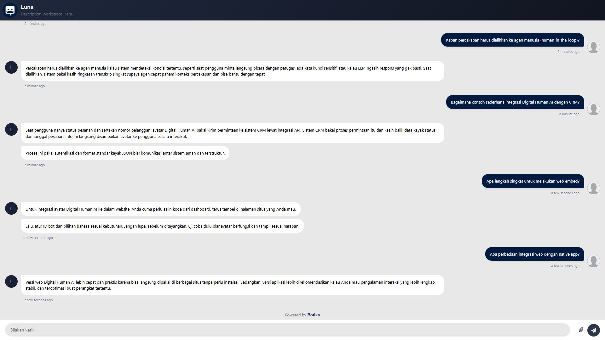 |
0.771 | PASS | 00:00:14 |
| Apa yang perlu diperhatikan saat integrasi di kiosk? | Apa yang perlu diperhatikan saat integrasi di kiosk? | Untuk implementasi Digital Human AI pada mesin kiosk, disarankan menggunakan mikrofon dengan kualitas tangkapan suara yang jernih, speaker dengan output audio yang jelas, serta layar yang diposisikan pada sudut pandang yang nyaman bagi pengguna. Selain itu, sediakan opsi interaksi melalui pengetikan apabila lingkungan sekitar terlalu bising, dan pastikan koneksi internet tetap stabil sehingga layanan tetap dapat berjalan tanpa gangguan. | Saat integrasi Digital Human AI di kiosk, pilih mikrofon dengan kualitas suara jernih dan speaker dengan output audio yang jelas. Pastikan layar diposisikan pada sudut pandang yang nyaman, terus sediakan opsi mengetik kalau lingkungan sekitar bising. Jangan lupa, pastikan koneksi internet selalu stabil biar layanan tetap lancar. | Auto: ⚠ Jawaban sudah benar untuk bagian digital dan human, tapi masih kurang lengkap. Perlu ditambahkan informasi tentang untuk, implementasi, mesin. |
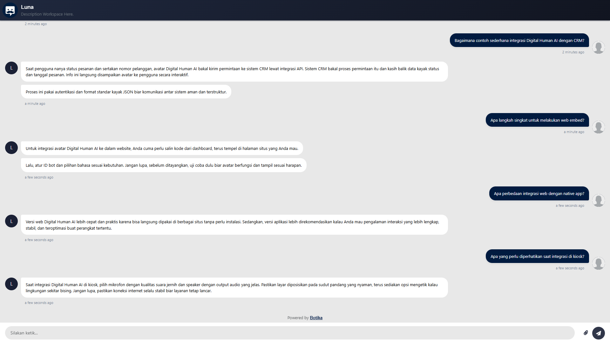 |
0.679 | FAILED | 00:00:30 |
| Bagaimana cara embedding avatar di layar LCD besar (display)? | Bagaimana cara embedding avatar di layar LCD besar (display)? | Untuk penggunaan Digital Human AI pada layar berukuran besar, pastikan tampilan teks memiliki ukuran yang cukup besar dengan tingkat kontras tinggi agar mudah dibaca dari jarak jauh. Atur pula volume suara pada level yang aman dan nyaman bagi pendengar. | Untuk menggunakan Digital Human AI di layar besar, pastikan teksnya cukup besar dan kontrasnya tinggi biar mudah dibaca dari jauh. Juga, atur volume suaranya ke level yang aman dan nyaman bagi pendengar. | Auto: ⚠ Jawaban sudah benar untuk bagian untuk dan digital, tapi masih kurang lengkap. Perlu ditambahkan informasi tentang penggunaan, pada, berukuran. |
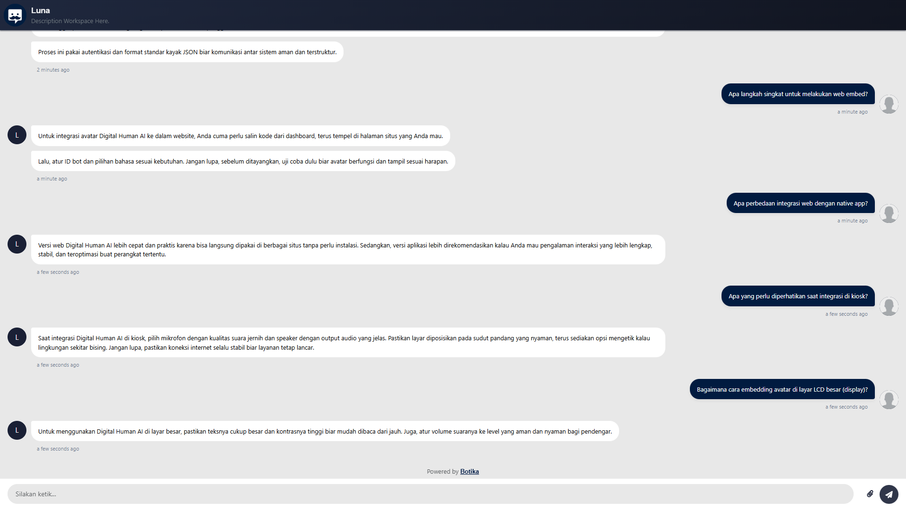 |
0.676 | FAILED | 00:00:15 |
| Apa itu latency dan bagaimana dampaknya bagi pengguna? | Apa itu latency dan bagaimana dampaknya bagi pengguna? | Latency merupakan jeda waktu antara pengguna mengajukan pertanyaan dan sistem memberikan jawaban. Untuk menjaga kelancaran percakapan yang terasa alami, idealnya waktu jeda ini berada di kisaran 1–3 detik. Apabila proses memerlukan waktu lebih lama, sebaiknya tampilkan indikator seperti 'memproses' agar pengguna mengetahui bahwa sistem Digital Human AI sedang bekerja dan tidak mengalami gangguan. | Latency adalah jeda waktu antara saat pengguna mengajukan pertanyaan dan sistem memberikan jawaban. Idealnya, jeda ini berkisar antara 1–3 detik agar percakapan terasa alami. Kalau lebih lama, disarankan menampilkan indikator seperti 'memproses' supaya pengguna tahu sistem sedang bekerja dan tidak mengalami gangguan. | Auto: ✓ Jawaban sudah cukup lengkap mencakup poin-poin utama. Bisa ditambahkan detail tentang merupakan, untuk untuk lebih komprehensif. |
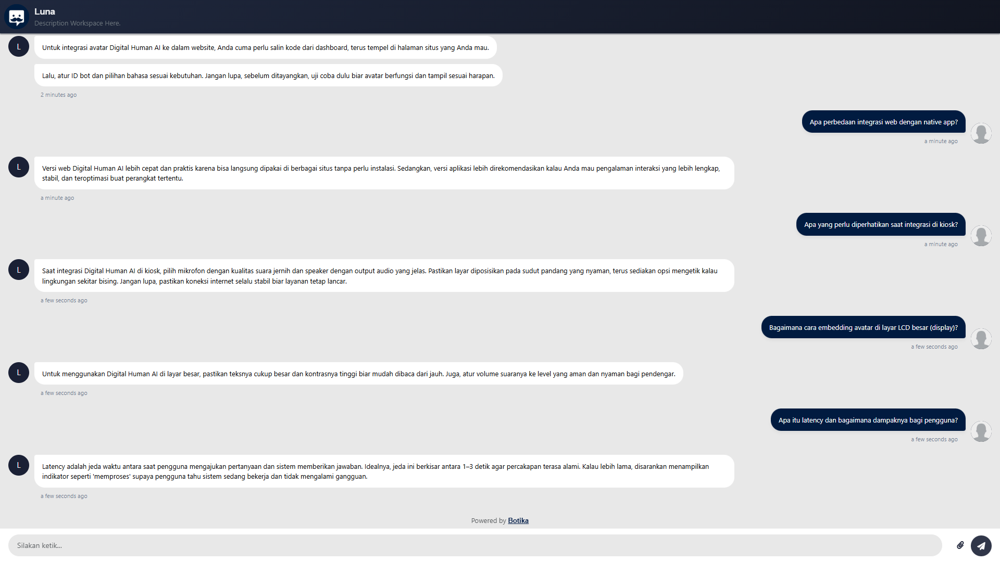 |
0.702 | PASS | 00:00:37 |
| Bagaimana cara mengoptimalkan performa dengan edge dan caching? | Bagaimana cara mengoptimalkan performa dengan edge dan caching? | Untuk mengurangi jeda respons, sistem Digital Human AI dapat menyimpan jawaban atas pertanyaan yang sering diajukan (FAQ), sehingga tanggapan dapat diberikan secara instan tanpa melalui proses pemrosesan ulang oleh model yang lebih kompleks. Pendekatan ini bertujuan untuk meningkatkan efisiensi sistem sekaligus menjaga kelancaran interaksi antara pengguna dan avatar. | Untuk mengoptimalkan performa, sistem Digital Human AI bisa menyimpan jawaban atas pertanyaan yang sering diajukan (FAQ). Dengan begitu, tanggapan bisa diberikan secara instan tanpa harus memproses ulang pertanyaan dengan model yang lebih kompleks. Ini bikin sistem lebih efisien dan interaksinya jadi lebih lancar. | Auto: ⚠ Jawaban sudah benar untuk bagian untuk dan sistem, tapi masih kurang lengkap. Perlu ditambahkan informasi tentang mengurangi, jeda, respons. |
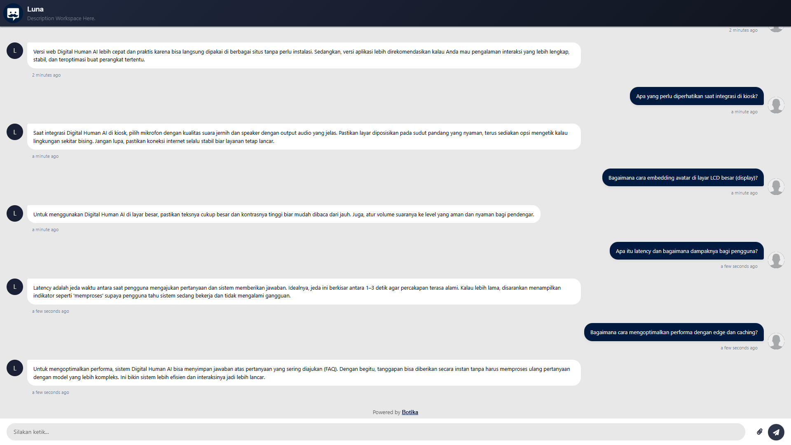 |
0.614 | FAILED | 00:00:14 |
| Apa saja metrik penting untuk memonitor performa Digital Human AI? | Apa saja metrik penting untuk memonitor performa Digital Human AI? | Kinerja sistem Digital Human AI perlu dipantau secara berkala dengan mempertimbangkan sejumlah indikator utama, antara lain kecepatan respons, tingkat akurasi dalam pengenalan suara, tingkat kepuasan pengguna, topik yang paling sering dibahas oleh pengguna, serta bahasa yang paling banyak digunakan. Data yang diperoleh dari pemantauan tersebut berperan sebagai dasar evaluasi dan pengembangan berkelanjutan guna meningkatkan mutu layanan serta kualitas pengalaman interaksi pengguna secara keseluruhan. | Beberapa metrik penting untuk memantau performa Digital Human AI adalah: - Kecepatan respons - Tingkat akurasi dalam pengenalan suara - Tingkat kepuasan pengguna - Topik yang paling sering dibahas oleh pengguna - Bahasa yang paling banyak digunakan Data dari metrik ini penting buat evaluasi dan pengembangan layanan agar pengalaman pengguna terus meningkat. | Auto: ⚠ Jawaban sudah benar untuk bagian digital dan human, tapi masih kurang lengkap. Perlu ditambahkan informasi tentang kinerja, sistem, perlu. |
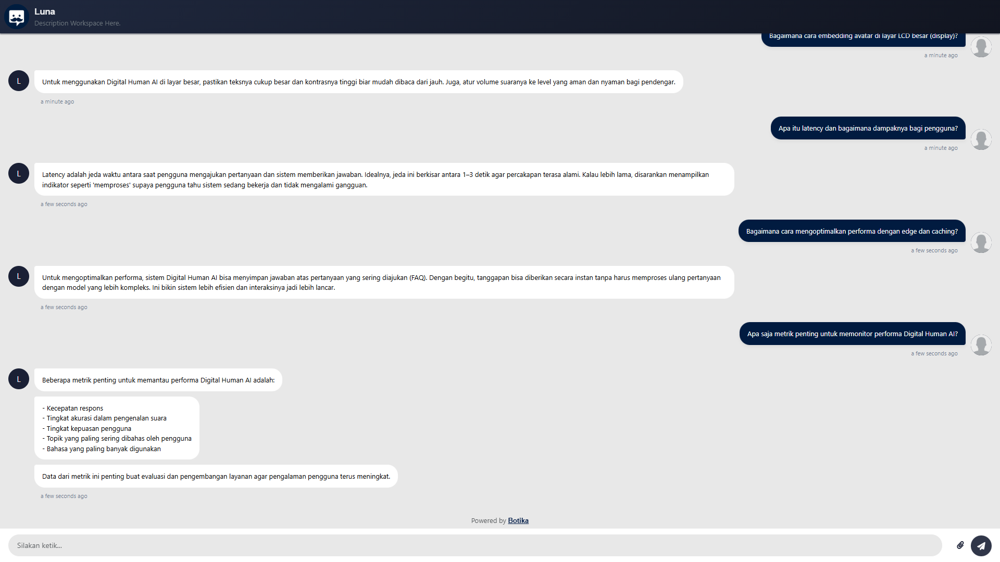 |
0.607 | FAILED | 00:00:37 |
| Apa itu logging dan debugging praktis pada Digital Human AI? | Apa itu logging dan debugging praktis pada Digital Human AI? | Penyimpanan catatan percakapan, kode kesalahan (error code), serta identitas sesi (session ID) merupakan bagian penting dari prosedur pemantauan sistem Digital Human AI. Apabila terjadi kendala dalam operasional, data tersebut berfungsi sebagai acuan untuk melakukan penelusuran dan identifikasi sumber permasalahan, seperti gangguan pada perangkat input suara, sistem pengenalan suara, maupun kestabilan koneksi jaringan. Mekanisme ini diterapkan untuk memastikan proses pemulihan dan perbaikan sistem dapat dilakukan secara cepat, akurat, dan terukur. | Logging dan debugging praktis pada Digital Human AI melibatkan penyimpanan catatan percakapan, kode kesalahan, dan identitas sesi. Data ini penting buat melacak dan mengidentifikasi sumber masalah, seperti gangguan pada perangkat input suara atau koneksi jaringan. Mekanisme ini membantu memastikan proses pemulihan dan perbaikan sistem bisa dilakukan dengan cepat, akurat, dan terukur. | Auto: ⚠ Jawaban hanya mencakup sebagian kecil informasi (penyimpanan dan catatan). Banyak informasi penting yang belum disebutkan seperti error, code, serta. |
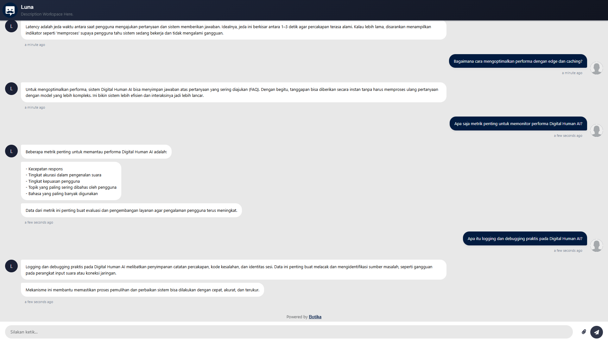 |
0.571 | FAILED | 00:00:15 |
| Apa saja yang perlu diuji saat UAT atau sebelum rilis (checklist pra-rilis)? | Apa saja yang perlu diuji saat UAT atau sebelum rilis (checklist pra-rilis)? | Uji coba fitur Speech-to-Text (STT) pada Digital Human AI perlu dilakukan dalam berbagai kondisi, termasuk lingkungan bising, koneksi internet lemah, dan penggunaan multi-bahasa. Pastikan pula kesesuaian lip-sync avatar dengan suara serta lakukan pengujian langsung oleh beberapa pengguna untuk menilai kemudahan penggunaan dan mendeteksi potensi kendala. | Pengujian fitur Speech-to-Text (STT) pada Digital Human AI perlu dilakukan dalam berbagai kondisi, termasuk: - Lingkungan bising - Koneksi internet lemah - Penggunaan multi-bahasa Pastikan juga kesesuaian lip-sync avatar dengan suara dan lakukan uji coba langsung oleh beberapa pengguna untuk menilai kemudahan penggunaan dan mendeteksi potensi kendala. | Auto: ✓ Jawaban sudah sangat baik dan lengkap. Semua informasi penting yang diharapkan sudah tercakup dengan akurat. |
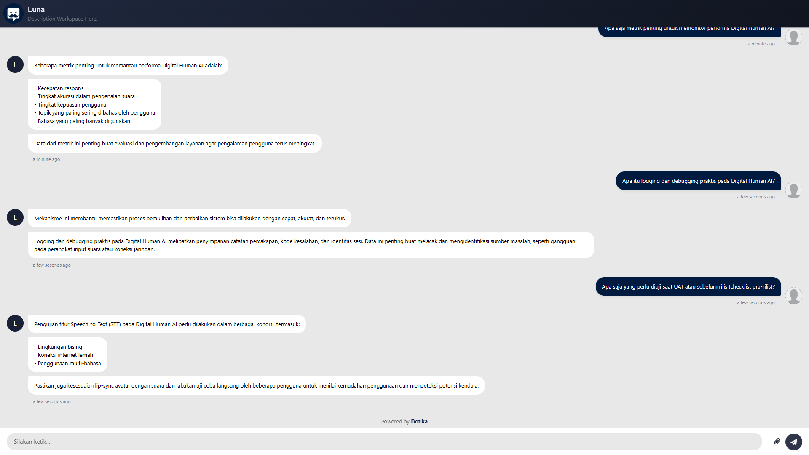 |
0.952 | PASS | 00:00:37 |
| Apa itu continuous improvement atau loop pelatihan dalam Digital Human AI? | Apa itu continuous improvement atau loop pelatihan dalam Digital Human AI? | Dalam Digital Human AI, kumpulkan contoh percakapan yang tidak berhasil untuk dianalisis. Perbaiki flow atau alur percakapan yang kurang sesuai, dan jika menggunakan model LLM, perbarui prompt atau lakukan fine-tuning berdasarkan data interaksi nyata. Lakukan pembaruan secara berkala guna meningkatkan akurasi dan kualitas respons avatar. | Dalam Digital Human AI, continuous improvement atau loop pelatihan berarti mengumpulkan contoh percakapan yang tidak berhasil untuk dianalisis. | Auto: ✗ Jawaban tidak cukup relevan dengan yang diharapkan. Sebagian besar informasi penting seperti kumpulkan, flow, alur tidak disebutkan. |
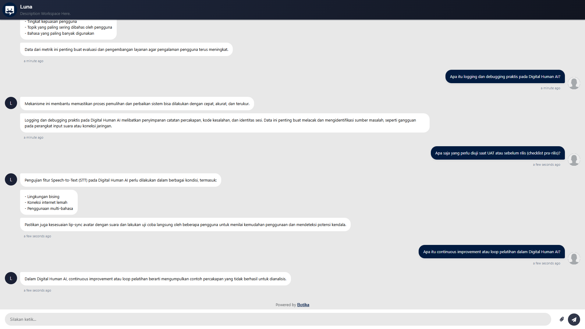 |
0.381 | FAILED | 00:00:12 |
| Mengapa desain avatar penting untuk tampilan? | Mengapa desain avatar penting untuk tampilan? | Tampilan avatar pada Digital Human AI memiliki peran penting dalam membentuk kesan pertama pengguna. Wajah dengan ekspresi yang ramah, gerakan yang halus, serta respons visual yang natural dapat meningkatkan kenyamanan dan kepercayaan pengguna dalam berinteraksi. Sebaliknya, avatar dengan ekspresi kaku atau tampilan yang kurang bersahabat berpotensi menurunkan tingkat kepercayaan dan kenyamanan pengguna. | Desain avatar penting karena wajah dengan ekspresi ramah dan gerakan halus dapat meningkatkan kenyamanan dan kepercayaan pengguna. Sebaliknya, ekspresi kaku bisa menurunkan tingkat kepercayaan dan kenyamanan. | Auto: ⚠ Jawaban hanya mencakup sebagian kecil informasi (avatar dan penting). Banyak informasi penting yang belum disebutkan seperti tampilan, pada, digital. |
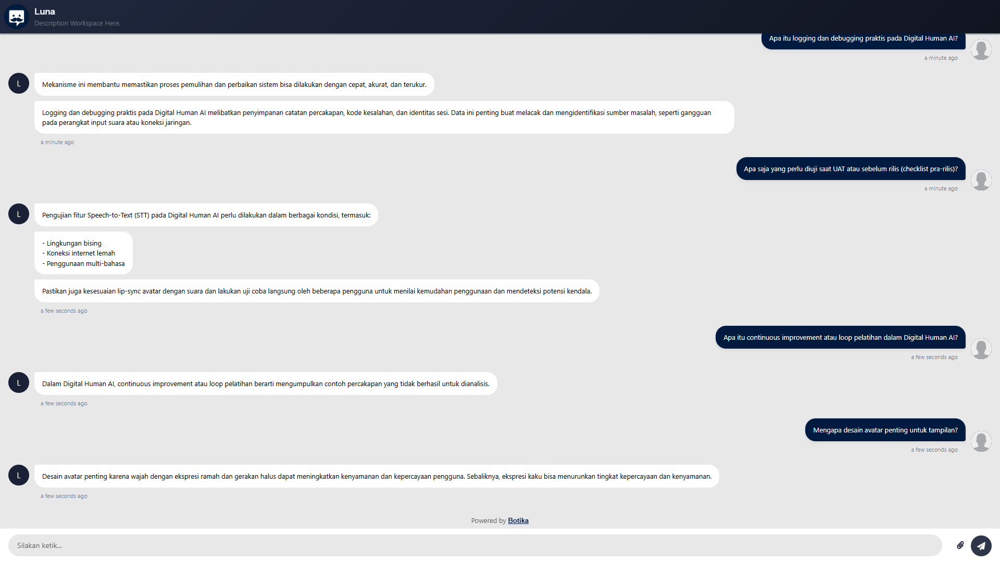 |
0.49 | FAILED | 00:00:12 |
| Apa saja pilihan gender dan gaya bicara avatar pada DHAI? | Apa saja pilihan gender dan gaya bicara avatar pada DHAI? | Avatar pada Digital Human AI dapat dirancang dengan karakteristik wajah pria maupun wanita, serta memiliki gaya bicara yang dapat disesuaikan, baik formal maupun santai. Penyesuaian ini sebaiknya dilakukan berdasarkan target audiens, misalnya gaya formal untuk layanan pemerintahan atau institusi resmi, dan gaya santai untuk kebutuhan promosi yang menyasar kalangan muda. | Avatar pada Digital Human AI bisa dirancang dengan karakteristik wajah pria atau wanita, serta memiliki gaya bicara yang bisa disesuaikan, baik formal maupun santai. Gaya bicara ini sebaiknya disesuaikan dengan target audiens, misalnya gaya formal untuk layanan pemerintahan atau institusi resmi, dan gaya santai untuk promosi yang menyasar kalangan muda. | Auto: ✓ Jawaban sudah cukup lengkap mencakup poin-poin utama. Bisa ditambahkan detail tentang dapat, dapat untuk lebih komprehensif. |
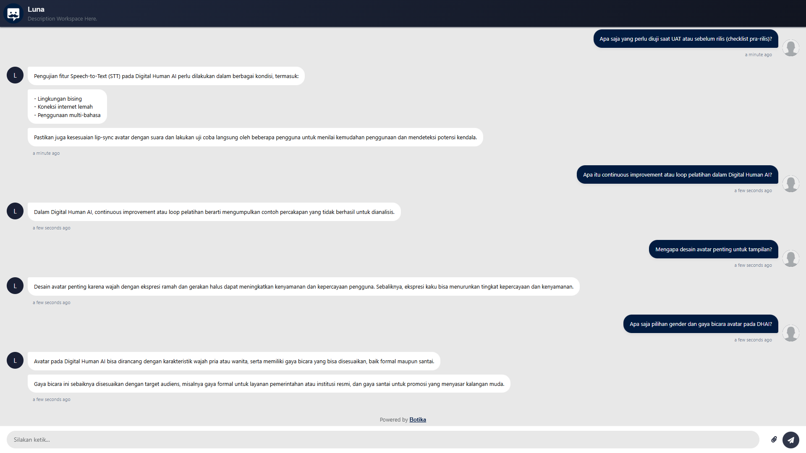 |
0.894 | PASS | 00:00:14 |
| Bagaimana menyesuaikan avatar dengan budaya lokal? | Bagaimana menyesuaikan avatar dengan budaya lokal? | Avatar pada Digital Human AI dapat dikustomisasi dengan tampilan busana, bahasa tubuh, serta gaya bicara yang selaras. Penyesuaian ini bertujuan untuk menciptakan kedekatan emosional dengan pengguna sekaligus menumbuhkan rasa dihargai dan dipahami dalam setiap interaksi. | Avatar pada Digital Human AI dapat disesuaikan dengan tampilan busana, bahasa tubuh, dan gaya bicara yang selaras dengan budaya lokal. Penyesuaian ini bertujuan untuk menciptakan kedekatan emosional dengan pengguna serta menumbuhkan rasa dihargai dan dipahami dalam setiap interaksi. | Auto: ✓ Jawaban sudah sangat baik dan lengkap. Semua informasi penting yang diharapkan sudah tercakup dengan akurat. |
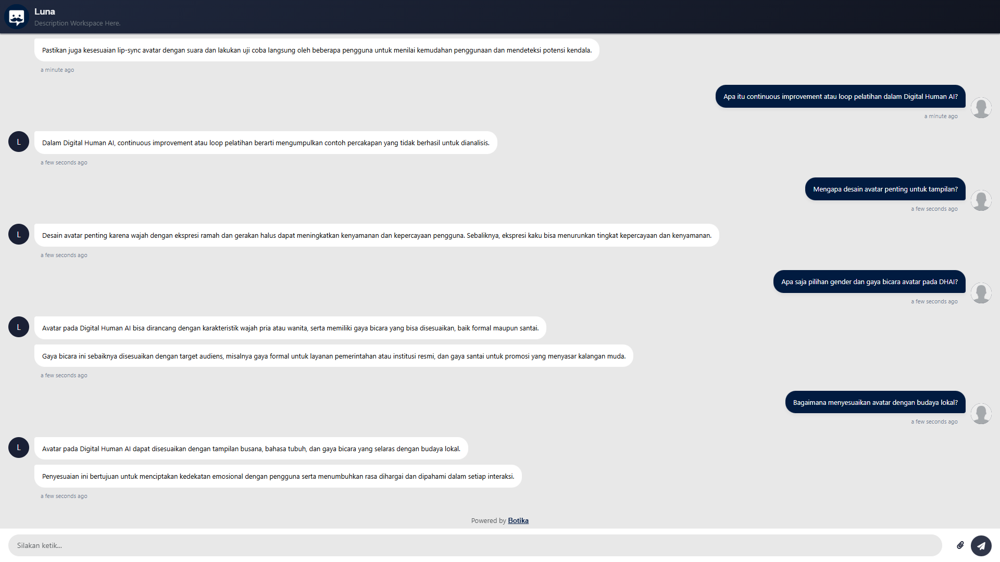 |
0.938 | PASS | 00:00:37 |
| Apa itu ekspresi wajah dinamis pada avatar? | Apa itu ekspresi wajah dinamis pada avatar? | Avatar pada Digital Human AI dapat menampilkan ekspresi dinamis, seperti tersenyum saat menyapa. Variasi ekspresi tersebut membantu menciptakan interaksi yang lebih alami, hangat, dan menyerupai percakapan manusia sesungguhnya. | Ekspresi wajah dinamis pada avatar Digital Human AI adalah kemampuan untuk menampilkan berbagai ekspresi, seperti tersenyum saat menyapa. | Auto: ⚠ Jawaban hanya mencakup sebagian kecil informasi (avatar dan pada). Banyak informasi penting yang belum disebutkan seperti dapat, variasi, tersebut. |
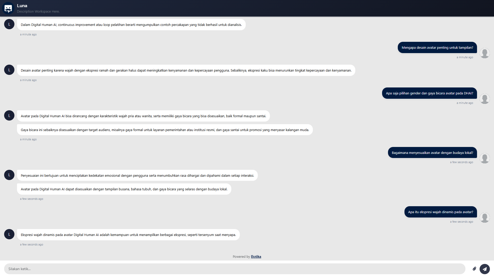 |
0.5 | FAILED | 00:00:12 |
| Apa itu gestur tangan sederhana pada avatar digital? | Apa itu gestur tangan sederhana pada avatar digital? | Beberapa avatar pada Digital Human AI dilengkapi dengan kemampuan gerak tubuh. Gerakan kecil semacam ini menambah kesan hidup dan membuat interaksi terasa lebih realistis serta menarik bagi pengguna. | Beberapa avatar pada Digital Human AI dilengkapi dengan kemampuan gerak tubuh seperti gestur tangan sederhana. Gerakan kecil ini menambah kesan hidup dan membuat interaksi terasa lebih realistis serta menarik bagi pengguna. | Auto: ✓ Jawaban sudah sangat baik dan lengkap. Semua informasi penting yang diharapkan sudah tercakup dengan akurat. |
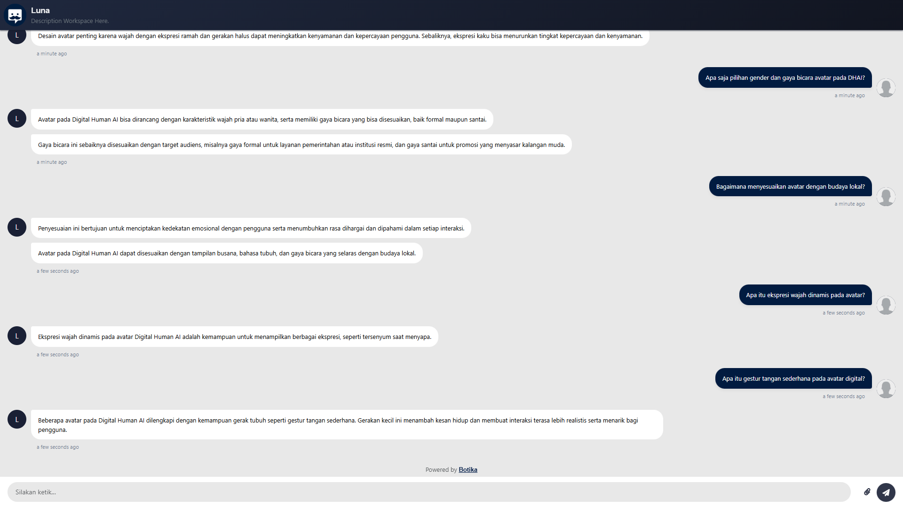 |
0.96 | PASS | 00:00:12 |
| Mengapa suara natural penting untuk avatar? | Mengapa suara natural penting untuk avatar? | Suara avatar yang terdengar kaku atau monoton dapat membuat pengguna cepat kehilangan minat. Sebaliknya, penggunaan suara yang natural dan ekspresif pada Digital Human AI menjadikan percakapan lebih nyaman didengar, sehingga interaksi dapat berlangsung lebih lama dan terasa lebih manusiawi. | Suara natural penting untuk avatar karena suara yang kaku atau monoton bisa bikin pengguna cepat kehilangan minat. Kalau suaranya natural dan ekspresif, percakapan jadi lebih nyaman didengar dan terasa lebih manusiawi. Ini bikin interaksi bisa berlangsung lebih lama! | Auto: ✓ Jawaban sudah cukup lengkap mencakup poin-poin utama. Bisa ditambahkan detail tentang terdengar, dapat untuk lebih komprehensif. |
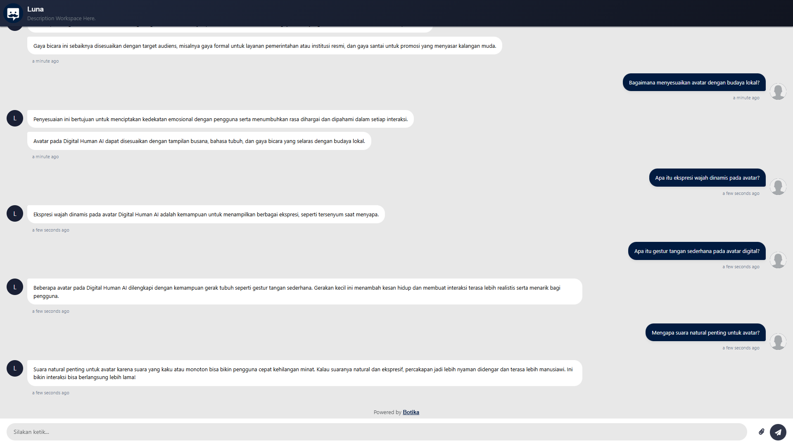 |
0.75 | PASS | 00:00:14 |
| Bagaimana cara menyesuaikan suara agar sesuai brand? | Bagaimana cara menyesuaikan suara agar sesuai brand? | Perusahaan dapat menyesuaikan karakter suara avatar pada Digital Human AI, misalnya memilih suara maskulin yang tegas atau suara feminin yang ramah, untuk memastikan konsistensi dengan identitas dan citra merek. Penyesuaian ini membantu memperkuat branding sekaligus menghadirkan pengalaman interaksi yang selaras dengan nilai perusahaan. | Perusahaan bisa menyesuaikan karakter suara avatar pada Digital Human AI, seperti memilih suara maskulin yang tegas atau suara feminin yang ramah, biar sesuai dengan identitas dan citra merek. Penyesuaian ini nggak cuma memperkuat branding, tapi juga bikin pengalaman interaksi selaras dengan nilai perusahaan. | Auto: ✓ Jawaban sudah cukup lengkap mencakup poin-poin utama. Bisa ditambahkan detail tentang dapat, misalnya untuk lebih komprehensif. |
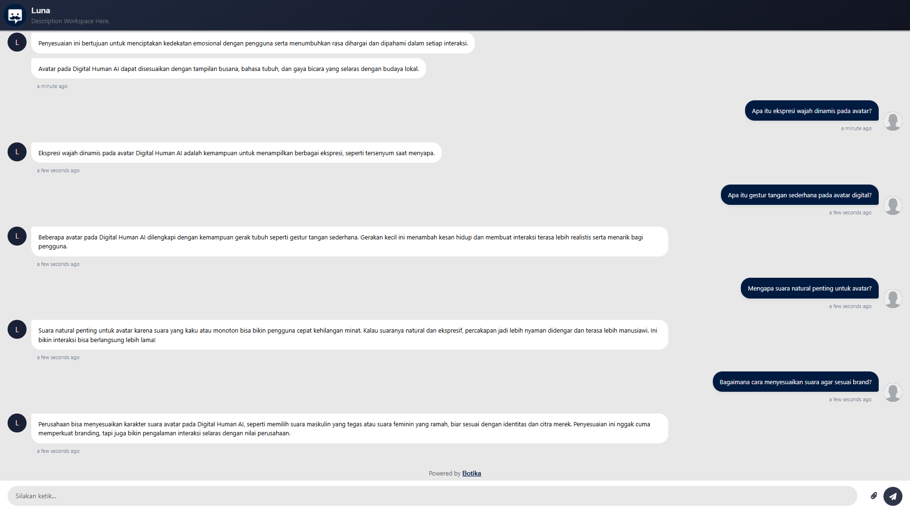 |
0.8 | PASS | 00:00:14 |
| Apa itu sinkronisasi suara dan ekspresi pada avatar? | Apa itu sinkronisasi suara dan ekspresi pada avatar? | Untuk menciptakan interaksi yang natural, suara avatar pada Digital Human AI perlu disesuaikan dengan ekspresi wajah yang ditampilkan. Penyesuaian ini membantu meningkatkan realisme percakapan dan kenyamanan pengguna. | Untuk menciptakan interaksi yang natural, suara avatar pada Digital Human AI perlu disesuaikan dengan ekspresi wajah yang ditampilkan. Penyesuaian ini membantu meningkatkan realisme percakapan dan kenyamanan pengguna. | Auto: ✓ Jawaban sudah sangat baik dan lengkap. Semua informasi penting yang diharapkan sudah tercakup dengan akurat. | 1 | PASS | 00:00:29 | |
| Bagaimana pengalaman pengguna pertama kali dengan avatar digital? | Bagaimana pengalaman pengguna pertama kali dengan avatar digital? | Pada interaksi awal, avatar Digital Human AI sebaiknya menyapa pengguna secara singkat, memperkenalkan dirinya, dan menawarkan bantuan dengan cara yang sederhana. Pendekatan ini bertujuan agar pengguna dapat memahami fungsi avatar dengan mudah dan merasa nyaman saat memulai percakapan. | Pada interaksi awal, avatar Digital Human AI sebaiknya menyapa pengguna secara singkat, memperkenalkan dirinya, dan menawarkan bantuan dengan cara yang sederhana. Pendekatan ini bikin pengguna bisa memahami fungsi avatar dengan mudah dan merasa nyaman saat mulai percakapan. | Auto: ✓ Jawaban sudah sangat baik dan lengkap. Semua informasi penting yang diharapkan sudah tercakup dengan akurat. | 0.912 | PASS | 00:00:12 | |
| Mengapa penting menyediakan panduan di layar? | Mengapa penting menyediakan panduan di layar? | Selain kemampuan berbicara, avatar Digital Human AI dapat menampilkan teks panduan di layar, misalnya 'Silakan katakan Halo untuk memulai'. Fitur ini membantu pengguna baru memahami cara berinteraksi dengan avatar secara lebih cepat dan intuitif. | Selain kemampuan berbicara, avatar Digital Human AI dapat menampilkan teks panduan di layar, misalnya 'Silakan katakan Halo untuk memulai'. Fitur ini membantu pengguna baru memahami cara berinteraksi dengan avatar secara lebih cepat dan intuitif. | Auto: ✓ Jawaban sudah sangat baik dan lengkap. Semua informasi penting yang diharapkan sudah tercakup dengan akurat. | 1 | PASS | 00:00:13 | |
| Apa itu indikator visual saat avatar mendengar? | Apa itu indikator visual saat avatar mendengar? | Saat avatar Digital Human AI sedang menerima input suara dari pengguna, sistem menampilkan indikator visual seperti animasi gelombang suara atau gerakan halus. Tampilan ini membantu pengguna memahami bahwa suara mereka sedang diproses dan sistem siap memberikan respons, sehingga interaksi menjadi lebih alami, transparan, dan meyakinkan | Saat avatar Digital Human AI sedang menerima input suara dari pengguna, sistem menampilkan indikator visual seperti animasi gelombang suara atau gerakan halus. Tampilan ini membantu pengguna memahami bahwa suara mereka sedang diproses dan sistem siap memberikan respons, sehingga interaksi menjadi lebih alami, transparan, dan meyakinkan. | Auto: ✓ Jawaban sudah sangat baik dan lengkap. Semua informasi penting yang diharapkan sudah tercakup dengan akurat. | 1 | PASS | 00:00:13 | |
| Apa itu indikator visual saat avatar sedang berpikir? | Apa itu indikator visual saat avatar sedang berpikir? | Saat avatar Digital Human AI sedang memproses jawaban, sistem menampilkan animasi penanda, misalnya 'Sebentar ya, saya sedang mencari jawaban.' Indikator ini memberi tahu pengguna bahwa sistem sedang bekerja, sehingga mereka tidak mengira percakapan terhenti atau mengalami gangguan, dan interaksi tetap terasa lancar. | Saat avatar Digital Human AI sedang memproses jawaban, sistem menampilkan animasi penanda, misalnya 'Sebentar ya, saya sedang mencari jawaban.' Indikator ini ngasih tahu pengguna bahwa sistem sedang bekerja, jadi mereka nggak ngira percakapan terhenti atau mengalami gangguan, dan interaksi tetap terasa lancar. | Auto: ✓ Jawaban sudah sangat baik dan lengkap. Semua informasi penting yang diharapkan sudah tercakup dengan akurat. | 0.921 | PASS | 00:00:15 | |
| Apa itu indikator visual saat avatar berbicara? | Apa itu indikator visual saat avatar berbicara? | Saat avatar Digital Human AI menyampaikan jawaban, sistem menampilkan teks ucapan di layar secara bersamaan. Fitur ini memfasilitasi pengguna tunarungu atau mereka yang kesulitan mendengar, sehingga setiap percakapan dapat diikuti dengan mudah dan inklusif. | Saat avatar Digital Human AI menyampaikan jawaban, sistem menampilkan teks ucapan di layar secara bersamaan. Fitur ini memfasilitasi pengguna tunarungu atau mereka yang kesulitan mendengar, sehingga setiap percakapan dapat diikuti dengan mudah dan inklusif. | Auto: ✓ Jawaban sudah sangat baik dan lengkap. Semua informasi penting yang diharapkan sudah tercakup dengan akurat. | 1 | PASS | 00:00:37 | |
| Bagaimana cara menangani percakapan panjang? | Bagaimana cara menangani percakapan panjang? | Untuk pertanyaan yang kompleks atau panjang, avatar Digital Human AI sebaiknya membagi jawaban menjadi beberapa bagian agar lebih mudah dipahami. Misalnya, avatar dapat menyampaikan, 'Saya akan jelaskan langkah pertama dulu,' sebelum melanjutkan ke bagian berikutnya. Pendekatan ini membantu pengguna tetap memahami informasi dengan jelas, menjaga alur percakapan tetap terstruktur, dan membuat interaksi terasa lebih alami. | Untuk pertanyaan yang kompleks atau panjang, avatar Digital Human AI sebaiknya membagi jawaban jadi beberapa bagian biar lebih mudah dipahami. Misalnya, avatar bisa bilang, "Saya akan jelaskan langkah pertama dulu," sebelum lanjut ke bagian berikutnya. Pendekatan ini bantu pengguna tetap paham informasi dengan jelas, menjaga alur percakapan tetap terstruktur, dan bikin interaksi terasa lebih alami. | Auto: ✓ Jawaban sudah sangat baik dan lengkap. Semua informasi penting yang diharapkan sudah tercakup dengan akurat. | 0.922 | PASS | 00:00:37 | |
| Mengapa penting memberikan opsi pilihan (menu) kepada pengguna? | Mengapa penting memberikan opsi pilihan (menu) kepada pengguna? | Apabila pengguna mengajukan pertanyaan yang terlalu umum atau memiliki banyak kemungkinan jawaban, avatar Digital Human AI dapat menampilkan menu pilihan untuk memperjelas maksud pengguna. Misalnya, avatar dapat menanyakan, 'Maksud Anda cek tagihan, bayar listrik, atau pasang baru?' Pendekatan ini membuat percakapan menjadi lebih cepat, efisien, dan mudah dipahami, sekaligus membantu pengguna menemukan tujuan mereka tanpa kebingungan. | Kalau pengguna mengajukan pertanyaan yang terlalu umum atau punya banyak kemungkinan jawaban, avatar Digital Human AI bisa tampilkan menu pilihan buat memperjelas maksud pengguna. Misalnya, avatar bisa tanya, "Maksud Anda cek tagihan, bayar listrik, atau pasang baru?" Pendekatan ini bikin percakapan jadi lebih cepat, efisien, dan mudah dipahami, sekaligus bantu pengguna menemukan tujuan mereka tanpa kebingungan. | Auto: ✓ Jawaban sudah cukup lengkap mencakup poin-poin utama. Bisa ditambahkan detail tentang apabila, memiliki untuk lebih komprehensif. | 0.865 | PASS | 00:00:16 | |
| Bagaimana avatar menyapa ulang jika pengguna bingung? | Bagaimana avatar menyapa ulang jika pengguna bingung? | Apabila pengguna tidak memberikan respons dalam waktu yang lama, avatar Digital Human AI dapat menyampaikan, 'Apakah ada yang bisa saya bantu?' Hal ini bertujuan untuk menjaga alur percakapan tetap aktif dan memastikan interaksi tetap berjalan dengan lancar. | Kalau pengguna nggak kasih respons dalam waktu lama, avatar Digital Human AI bisa bilang, "Apakah ada yang bisa saya bantu?" | Auto: ⚠ Jawaban hanya mencakup sebagian kecil informasi (pengguna dan respons). Banyak informasi penting yang belum disebutkan seperti apabila, tidak, memberikan. | 0.469 | FAILED | 00:00:15 | |
| Mengapa perlu membatasi topik percakapan? | Mengapa perlu membatasi topik percakapan? | Avatar Digital Human AI perlu diarahkan untuk memberikan jawaban sesuai topik layanan yang ditentukan, seperti listrik, kesehatan, atau perbankan. Apabila pengguna mengajukan pertanyaan di luar topik, avatar sebaiknya merespons dengan sopan dan kemudian mengarahkan percakapan kembali ke topik yang relevan. | Avatar Digital Human AI perlu diarahkan untuk memberikan jawaban sesuai topik layanan yang ditentukan, kayak listrik, kesehatan, atau perbankan. Kalau pengguna tanya di luar topik, avatar sebaiknya respons dengan sopan dan arahkan kembali ke topik yang relevan. | Auto: ✓ Jawaban sudah cukup lengkap mencakup poin-poin utama. Bisa ditambahkan detail tentang seperti, apabila untuk lebih komprehensif. | 0.889 | PASS | 00:00:13 | |
| Bagaimana cara avatar menghadapi humor dari pengguna? | Bagaimana cara avatar menghadapi humor dari pengguna? | Dalam interaksi Digital Human AI, terkadang pengguna menyisipkan candaan atau komentar ringan. Pada situasi tersebut, avatar dapat memberikan respons yang santai dan positif, misalnya, 'Haha, itu lucu. Sekarang, apa ada yang bisa saya bantu terkait layanan?' Pendekatan ini membantu menjaga suasana percakapan tetap ramah dan alami, sekaligus mengarahkan pengguna kembali ke tujuan utama interaksi. | Kalau ada humor dari pengguna, avatar bisa respons dengan santai dan positif, misalnya, "Haha, itu lucu. Sekarang, ada yang bisa saya bantu terkait layanan?" | Auto: ⚠ Jawaban hanya mencakup sebagian kecil informasi (terkadang dan pengguna). Banyak informasi penting yang belum disebutkan seperti dalam, interaksi, digital. | 0.457 | FAILED | 00:00:12 | |
| Bagaimana menghadapi pertanyaan sensitif dengan aman? | Bagaimana menghadapi pertanyaan sensitif dengan aman? | Apabila pengguna mengajukan pertanyaan atau permintaan yang bersifat pribadi, seperti nomor PIN atau data sensitif lainnya, avatar Digital Human AI harus menolak dengan sopan. Misalnya, avatar dapat menjawab, 'Maaf, saya tidak dapat meminta atau menyimpan data sensitif. Mari kita fokus pada layanan yang dapat saya bantu.' Pendekatan ini memastikan keamanan data pengguna tetap terjaga, sekaligus menjaga percakapan berlangsung secara profesional dan positif. | Kalau ada pertanyaan atau permintaan yang bersifat pribadi, seperti nomor PIN atau data sensitif lainnya, avatar Digital Human AI harus menolak dengan sopan. Misalnya, bisa bilang, "Maaf, saya tidak dapat meminta atau menyimpan data sensitif. Mari kita fokus pada layanan yang dapat saya bantu." Ini buat jaga keamanan data pengguna tetap aman. | Auto: ✓ Jawaban sudah cukup lengkap mencakup poin-poin utama. Bisa ditambahkan detail tentang apabila, mengajukan untuk lebih komprehensif. | 0.81 | PASS | 00:00:15 | |
| Apa itu mode privasi untuk percakapan? | Apa itu mode privasi untuk percakapan? | Dalam situasi atau area publik, avatar dapat mengaktifkan mode privasi agar respons hanya ditampilkan di layar tanpa suara. Fitur ini dirancang untuk menjaga kerahasiaan isi percakapan, sehingga pengguna tetap merasa aman, nyaman, dan terlindungi saat berinteraksi dengan DHAI di tempat umum. | Mode privasi buat percakapan itu fitur yang bisa diaktifkan dalam situasi atau area publik, biar respons dari avatar cuma ditampilkan di layar tanpa suara. Jadi, isi percakapan tetap rahasia, dan pengguna jadi merasa aman dan nyaman saat interaksi di tempat umum. | Auto: ✓ Jawaban sudah cukup lengkap mencakup poin-poin utama. Bisa ditambahkan detail tentang dapat, mengaktifkan untuk lebih komprehensif. | 0.722 | PASS | 00:00:14 | |
| Apa itu mode publik dengan suara keras? | Apa itu mode publik dengan suara keras? | Dalam situasi seperti acara, pameran, atau demo publik, avatar dapat beroperasi dalam mode publik, di mana suara dibuat lebih keras dan ekspresi animasi menjadi lebih hidup serta menarik perhatian. Fitur ini membantu avatar berinteraksi dengan banyak orang sekaligus dan menciptakan pengalaman yang lebih dinamis dan interaktif. | Mode publik dengan suara keras digunakan dalam situasi seperti acara, pameran, atau demo publik. Di mode ini, suara avatar jadi lebih keras dan ekspresi animasinya lebih hidup, biar bisa menarik perhatian dan berinteraksi dengan banyak orang sekaligus. Jadi, pengalaman interaksi jadi lebih dinamis dan seru! | Auto: ✓ Jawaban sudah cukup lengkap mencakup poin-poin utama. Bisa ditambahkan detail tentang dapat, beroperasi untuk lebih komprehensif. | 0.78 | PASS | 00:00:14 | |
| Bagaimana integrasi avatar dengan layar sentuh? | Bagaimana integrasi avatar dengan layar sentuh? | Avatar Digital Human AI dapat diintegrasikan dengan tampilan layar sentuh untuk menghadirkan pengalaman interaktif. Misalnya, ketika pengguna menekan tombol 'Tagihan' pada layar, avatar akan secara langsung menjelaskan detail terkait tagihan tersebut. Integrasi ini membuat interaksi menjadi lebih intuitif dan mudah digunakan, khususnya pada kiosk layanan, pameran, atau ruang publik. | Avatar Digital Human AI bisa diintegrasikan dengan layar sentuh buat pengalaman interaktif yang lebih seru. Misalnya, kalau pengguna tekan tombol 'Tagihan' di layar, avatar langsung jelasin detailnya. Ini bikin interaksi lebih intuitif dan gampang dipakai, cocok buat kios layanan, pameran, atau ruang publik. | Auto: ✓ Jawaban sudah cukup lengkap mencakup poin-poin utama. Bisa ditambahkan detail tentang dapat, tampilan untuk lebih komprehensif. | 0.717 | PASS | 00:00:15 | |
| Bagaimana integrasi avatar dengan sensor kamera? | Bagaimana integrasi avatar dengan sensor kamera? | Avatar Digital Human AI dapat diintegrasikan dengan sensor kamera untuk mendeteksi kehadiran pengguna, sehingga secara otomatis menyapa saat seseorang muncul di depan layar. Apabila pengguna meninggalkan area, sesi percakapan dapat diakhiri secara otomatis. | Avatar Digital Human AI bisa diintegrasikan dengan sensor kamera untuk mendeteksi kehadiran pengguna. Jadi, saat seseorang muncul di depan layar, avatar otomatis menyapa. Dan kalau pengguna pergi, sesi percakapan bisa diakhiri secara otomatis. Praktis banget, kan? | Auto: ✓ Jawaban sudah cukup lengkap mencakup poin-poin utama. Bisa ditambahkan detail tentang dapat, sehingga untuk lebih komprehensif. | 0.839 | PASS | 00:00:13 | |
| Bagaimana integrasi avatar dengan kode QR? | Bagaimana integrasi avatar dengan kode QR? | Avatar Digital Human AI dapat menampilkan QR code pada layar untuk berbagai keperluan, seperti pembayaran, unduhan aplikasi, atau penyediaan informasi tambahan. Fitur ini mempermudah pengguna dalam mengakses layanan atau konten terkait secara cepat dan praktis | Avatar Digital Human AI bisa menampilkan kode QR di layar buat berbagai keperluan, seperti pembayaran, unduhan aplikasi, atau info tambahan. Jadi, pengguna bisa akses layanan atau konten terkait dengan cepat dan praktis. Gampang banget, kan? | Auto: ✓ Jawaban sudah cukup lengkap mencakup poin-poin utama. Bisa ditambahkan detail tentang dapat, code untuk lebih komprehensif. | 0.742 | PASS | 00:00:13 | |
| Bagaimana integrasi avatar dengan sistem pembayaran? | Bagaimana integrasi avatar dengan sistem pembayaran? | Dalam beberapa layanan, avatar Digital Human AI dapat memandu pengguna untuk melakukan pembayaran digital secara aman, misalnya melalui e-wallet atau transfer bank. Pendekatan ini dirancang untuk memberikan panduan yang jelas dan memudahkan pengguna dalam menyelesaikan transaksi secara efisien. | Dalam beberapa layanan, Avatar Digital Human AI bisa bantu pengguna melakukan pembayaran digital dengan aman, misalnya lewat e-wallet atau transfer bank. Avatar akan memberikan panduan yang jelas biar transaksi selesai dengan efisien. Cocok buat yang suka praktis! | Auto: ✓ Jawaban sudah cukup lengkap mencakup poin-poin utama. Bisa ditambahkan detail tentang dapat, untuk untuk lebih komprehensif. | 0.886 | PASS | 00:00:19 | |
| Bagaimana avatar dapat dipakai untuk edukasi pelanggan? | Bagaimana avatar dapat dipakai untuk edukasi pelanggan? | Avatar Digital Human AI dapat berperan sebagai asisten interaktif dalam edukasi pelanggan, membantu menjelaskan penggunaan layanan secara langkah demi langkah. Sebagai contoh, avatar dapat menyampaikan, 'Untuk cek tagihan, buka aplikasi PLN Mobile, pilih menu Tagihan, lalu masukkan nomor pelanggan.' Dengan pendekatan ini, avatar tidak hanya memberikan jawaban, tetapi juga membimbing pengguna secara langsung, sehingga proses pembelajaran menjadi lebih mudah dipahami dan menarik. | Avatar Digital Human AI bisa jadi asisten interaktif buat edukasi pelanggan. Misalnya, dia bisa menjelaskan cara pakai layanan langkah demi langkah. Contohnya, buat cek tagihan: buka aplikasi PLN Mobile, pilih menu Tagihan, terus masukkan nomor pelanggan. Jadi, pelanggan dapat bimbingan langsung dan belajar dengan lebih mudah dan menarik! | Auto: ⚠ Jawaban sudah benar untuk bagian avatar dan digital, tapi masih kurang lengkap. Perlu ditambahkan informasi tentang berperan, dalam, membantu. | 0.684 | FAILED | 00:00:14 | |
| Bagaimana avatar digunakan sebagai alat pelatihan internal? | Bagaimana avatar digunakan sebagai alat pelatihan internal? | Perusahaan dapat memanfaatkan avatar Digital Human AI untuk program pelatihan karyawan baru. Avatar dapat menjelaskan prosedur operasional standar (SOP), menampilkan simulasi penjelasan, dan menyajikan kuis singkat untuk menguji pemahaman peserta. Pendekatan ini membantu proses pembelajaran menjadi lebih interaktif dan efektif. | Avatar Digital Human AI bisa dimanfaatkan buat pelatihan karyawan baru. Dengan avatar, perusahaan bisa jelasin SOP, menampilkan simulasi, dan kasih kuis singkat buat uji pemahaman. Jadi, proses belajar jadi lebih interaktif dan efektif. Asyik, kan? | Auto: ⚠ Jawaban sudah benar untuk bagian perusahaan dan memanfaatkan, tapi masih kurang lengkap. Perlu ditambahkan informasi tentang dapat, untuk, program. | 0.657 | FAILED | 00:00:16 | |
| Bagaimana avatar digunakan untuk event promosi? | Bagaimana avatar digunakan untuk event promosi? | Dalam acara seperti pameran atau promosi produk, avatar Digital Human AI dapat berperan sebagai presenter digital yang menyapa pengunjung, memperkenalkan produk, serta menjawab pertanyaan umum. Dengan tampilan yang interaktif dan ekspresif, avatar ini membantu menciptakan pengalaman promosi yang modern, menarik, dan lebih mudah diingat oleh pengunjung. | Dalam event kayak pameran atau promosi produk, Avatar Digital Human AI bisa jadi presenter digital. Dia nyapa pengunjung, ngenalin produk, dan jawab pertanyaan umum. Dengan tampilan interaktif dan ekspresif, jadi pengalaman promosi lebih modern, menarik, dan gampang diingat pengunjung. Mantap, kan? | Auto: ✓ Jawaban sudah cukup lengkap mencakup poin-poin utama. Bisa ditambahkan detail tentang acara, seperti untuk lebih komprehensif. | 0.738 | PASS | 00:00:15 | |
| Bagaimana avatar digunakan di sektor pendidikan? | Bagaimana avatar digunakan di sektor pendidikan? | Sekolah dapat memanfaatkan avatar Digital Human AI sebagai asisten belajar interaktif. Misalnya, ketika siswa mengajukan pertanyaan mengenai materi sejarah, avatar dapat memberikan jawaban secara lisan sekaligus menampilkan gambar atau ilustrasi pendukung, sehingga proses pembelajaran menjadi lebih menarik dan mudah dipahami. | Sekolah bisa pakai avatar Digital Human AI buat asisten belajar interaktif. Kalau siswa nanya soal materi sejarah, misalnya, avatar bisa kasih jawaban lisan sambil tampilkan gambar atau ilustrasi pendukung. Jadi, belajar jadi lebih menarik dan gampang dipahami! | Auto: ⚠ Jawaban sudah benar untuk bagian sekolah dan avatar, tapi masih kurang lengkap. Perlu ditambahkan informasi tentang dapat, memanfaatkan, ketika. | 0.658 | FAILED | 00:00:13 | |
| Bagaimana avatar digunakan di sektor perbankan? | Bagaimana avatar digunakan di sektor perbankan? | Avatar Digital Human AI dapat memberikan penjelasan secara interaktif mengenai prosedur pembukaan rekening, keamanan transaksi perbankan online, serta program promosi terbaru. Pendekatan ini memudahkan nasabah dalam memahami layanan perbankan secara jelas dan efisien | Avatar Digital Human AI di sektor perbankan bisa bantu nasabah ngerti prosedur pembukaan rekening, keamanan transaksi online, dan program promosi terbaru. Dengan pendekatan interaktif, nasabah jadi lebih mudah paham layanan perbankan secara jelas dan efisien. Keren, kan? | Auto: ✓ Jawaban sudah cukup lengkap mencakup poin-poin utama. Bisa ditambahkan detail tentang dapat, serta untuk lebih komprehensif. | 0.867 | PASS | 00:00:14 | |
| Bagaimana avatar digunakan di layanan pemerintah? | Bagaimana avatar digunakan di layanan pemerintah? | Instansi pemerintah dapat memanfaatkan avatar Digital Human AI di kantor layanan publik untuk membantu warga memahami prosedur administrasi, seperti pembuatan KTP atau perpanjangan SIM, dengan lebih cepat dan jelas. Pendekatan ini meningkatkan efisiensi layanan sekaligus mempermudah akses informasi bagi masyarakat. | Avatar Digital Human AI bisa dipakai di kantor layanan publik buat bantu warga ngerti prosedur administrasi, kayak bikin KTP atau perpanjangan SIM, dengan lebih cepat dan jelas. Ini bikin layanan jadi lebih efisien dan masyarakat lebih gampang akses informasi. Jadi, urusan jadi lebih simpel dan cepat! | Auto: ⚠ Jawaban sudah benar untuk bagian avatar dan digital, tapi masih kurang lengkap. Perlu ditambahkan informasi tentang instansi, pemerintah, dapat. | 0.647 | FAILED | 00:00:14 | |
| Bagaimana avatar digunakan di layanan transportasi? | Bagaimana avatar digunakan di layanan transportasi? | Avatar Digital Human AI dapat ditempatkan di terminal atau stasiun untuk memberikan informasi mengenai jadwal keberangkatan, harga tiket, serta arahan ke peron. Pendekatan ini mempermudah pengguna dalam mengakses informasi secara cepat dan interaktif. | Avatar Digital Human AI bisa ditempatkan di terminal atau stasiun buat kasih info tentang jadwal keberangkatan, harga tiket, dan arahan ke peron. Jadi, pengguna bisa akses info dengan cepat dan interaktif. Praktis banget, kan? | Auto: ✓ Jawaban sudah cukup lengkap mencakup poin-poin utama. Bisa ditambahkan detail tentang dapat, untuk untuk lebih komprehensif. | 0.75 | PASS | 00:00:13 | |
| Bagaimana avatar dapat meningkatkan kepuasan pelanggan? | Bagaimana avatar dapat meningkatkan kepuasan pelanggan? | Dengan respons yang cepat dan ramah, pengguna merasa dihargai dan memperoleh kepuasan lebih tinggi terhadap layanan yang diberikan oleh Digital Human AI. Pendekatan ini berkontribusi pada peningkatan pengalaman interaksi dan persepsi positif terhadap layanan. | Dengan respons yang cepat dan ramah, pengguna merasa dihargai dan mendapatkan kepuasan lebih tinggi terhadap layanan yang diberikan oleh Digital Human AI. Pendekatan ini bantu ningkatin pengalaman interaksi dan persepsi positif terhadap layanan. Jadi, pelanggan senang, perusahaan pun happy! | Auto: ✓ Jawaban sudah cukup lengkap mencakup poin-poin utama. Bisa ditambahkan detail tentang berkontribusi, pada untuk lebih komprehensif. | 0.897 | PASS | 00:00:14 | |
| Bagaimana avatar bisa menghemat biaya operasional perusahaan? | Bagaimana avatar bisa menghemat biaya operasional perusahaan? | Perusahaan dapat menekan biaya operasional untuk staf tambahan karena sebagian layanan dapat ditangani secara otomatis oleh avatar Digital Human AI. Pendekatan ini memungkinkan efisiensi sumber daya sekaligus menjaga kualitas pelayanan kepada pengguna. | Avatar Digital Human AI bisa bantu perusahaan menghemat biaya operasional karena sebagian layanan bisa ditangani otomatis oleh avatar, jadi nggak perlu staf tambahan. Efisiensi sumber daya tetap terjaga dan kualitas pelayanan ke pengguna juga tetap oke. Hemat biaya, tapi tetap top! | Auto: ✓ Jawaban sudah cukup lengkap mencakup poin-poin utama. Bisa ditambahkan detail tentang dapat, menekan untuk lebih komprehensif. | 0.7 | PASS | 00:00:13 | |
| Bagaimana avatar dapat digunakan sebagai media branding? | Bagaimana avatar dapat digunakan sebagai media branding? | Perusahaan dapat merancang avatar Digital Human AI dengan seragam, palet warna, bahasa, dan gender, sehingga memperkuat citra perusahaan dan konsistensi branding dalam interaksi dengan pengguna. | Perusahaan bisa rancang avatar Digital Human AI dengan seragam, palet warna, bahasa, dan gender yang sesuai brand mereka. Ini bantu perkuat citra perusahaan dan konsistensi branding pas interaksi dengan pengguna. Jadi avatar bukan cuma asisten, tapi juga representasi keren dari brand! | Auto: ✓ Jawaban sudah cukup lengkap mencakup poin-poin utama. Bisa ditambahkan detail tentang dapat, sehingga untuk lebih komprehensif. | 0.864 | PASS | 00:00:14 | |
| Bagaimana avatar dapat menjadi alat inklusi? | Bagaimana avatar dapat menjadi alat inklusi? | Pengguna yang mengalami kesulitan membaca dapat mendengar jawaban yang disampaikan oleh avatar, sementara pengguna tunarungu dapat mengikuti percakapan melalui teks yang ditampilkan di layar. Dengan pendekatan ini, layanan Digital Human AI menjadi lebih inklusif dan dapat diakses oleh semua kalangan. | Avatar Digital Human AI bisa jadi alat inklusi dengan memberikan jawaban audio buat pengguna yang kesulitan membaca, dan teks buat pengguna tunarungu. Ini bikin layanan jadi lebih inklusif dan bisa diakses oleh semua kalangan. Jadi, semua orang bisa dapetin manfaatnya tanpa terkecuali! | Auto: ⚠ Jawaban sudah benar untuk bagian pengguna dan yang, tapi masih kurang lengkap. Perlu ditambahkan informasi tentang mengalami, dapat, mendengar. | 0.667 | FAILED | 00:00:14 | |
| Apa itu mode diam pada avatar digital? | Apa itu mode diam pada avatar digital? | Jika digunakan di tempat sunyi (misalnya perpustakaan), avatar bisa dimatikan suaranya dan hanya menampilkan jawaban di layar. | Mode diam pada avatar digital memungkinkan suaranya dimatikan dan hanya menampilkan jawaban di layar. Ini cocok banget buat digunakan di tempat yang sunyi, kayak perpustakaan. Jadi, tetap bisa berinteraksi tanpa ganggu ketenangan sekitar! | Auto: ✓ Jawaban sudah baik dan mencakup sebagian besar informasi yang dibutuhkan. Akan lebih sempurna jika ditambahkan informasi tentang jika dan misalnya. | 0.857 | PASS | 00:00:13 | |
| Apa itu mode interaktif multimedia pada avatar digital? | Apa itu mode interaktif multimedia pada avatar digital? | Avatar Digital Human AI dapat dioperasikan dalam mode interaktif multimedia, yang memungkinkan penyajian video edukasi, gambar, atau elemen visual pendukung dan halaman website saat menjelaskan suatu topik. Fitur ini mempermudah pengguna dalam memahami informasi secara lebih jelas dan menarik, terutama untuk materi yang bersifat visual atau instruksional. | Mode interaktif multimedia pada avatar digital memungkinkan penyajian video edukasi, gambar, elemen visual pendukung, dan halaman website saat menjelaskan suatu topik. Fitur ini bikin informasi lebih jelas dan menarik, terutama buat materi yang bersifat visual atau instruksional. Jadi, belajar jadi lebih seru dan mudah dipahami! | Auto: ✓ Jawaban sudah cukup lengkap mencakup poin-poin utama. Bisa ditambahkan detail tentang human, dapat untuk lebih komprehensif. | 0.791 | PASS | 00:00:14 | |
| Apa itu fitur survei kepuasan pada avatar digital? | Apa itu fitur survei kepuasan pada avatar digital? | Setelah percakapan selesai, avatar Digital Human AI dapat menjalankan fitur survei kepuasan dengan menanyakan hal sederhana, misalnya, 'Apakah jawaban saya membantu Anda?' Fitur ini memungkinkan perusahaan untuk mengukur kualitas layanan, memahami pengalaman pengguna, serta melakukan peningkatan berkelanjutan terhadap performa avatar dan sistem Digital Human AI secara keseluruhan. | Setelah percakapan selesai, avatar Digital Human AI bisa menjalankan fitur survei kepuasan dengan menanyakan hal sederhana, misalnya, 'Apakah jawaban saya membantu Anda?' Fitur ini membantu perusahaan buat mengukur kualitas layanan, memahami pengalaman pengguna, dan terus meningkatkan performa avatar serta sistem Digital Human AI secara keseluruhan. Jadi, perusahaan bisa terus berbenah demi kepuasan pengguna! | Auto: ✓ Jawaban sudah cukup lengkap mencakup poin-poin utama. Bisa ditambahkan detail tentang dapat, memungkinkan untuk lebih komprehensif. | 0.833 | PASS | 00:00:14 | |
| Bagaimana avatar bisa terus belajar dari percakapan? | Bagaimana avatar bisa terus belajar dari percakapan? | Setiap interaksi baru dengan avatar Digital Human AI dapat digunakan untuk meningkatkan kemampuan sistem. Semakin sering digunakan, avatar akan menjadi lebih cerdas dan mampu memberikan respons yang lebih natural serta relevan bagi pengguna. | Setiap interaksi baru dengan avatar Digital Human AI bisa digunakan untuk meningkatkan kemampuan sistem. Semakin sering digunakan, avatar bakal jadi lebih cerdas dan bisa ngasih respons yang lebih natural dan relevan buat pengguna. Jadi, makin sering ngobrol, makin pinter dia! | Auto: ✓ Jawaban sudah cukup lengkap mencakup poin-poin utama. Bisa ditambahkan detail tentang dapat, memberikan untuk lebih komprehensif. | 0.871 | PASS | 00:00:13 | |
| Bagaimana avatar mendukung komunikasi multibahasa? | Bagaimana avatar mendukung komunikasi multibahasa? | Pengguna asing dapat mengajukan pertanyaan dalam bahasa Inggris, dan avatar Digital Human AI akan memberikan jawaban dalam bahasa yang sama. Pendekatan ini memastikan layanan dapat diakses oleh berbagai kalangan pengguna tanpa terbatas pada bahasa tertentu. | Avatar Digital Human AI bisa jawab pertanyaan dalam bahasa yang sama dengan penggunanya. Jadi, kalau pengguna bertanya dalam bahasa Inggris, avatar bakal jawab dalam bahasa Inggris juga. Dengan cara ini, layanan bisa diakses oleh siapa saja, tanpa terbatas bahasa. Bikin komunikasi jadi lebih mudah dan inklusif! | Auto: ⚠ Jawaban sudah benar untuk bagian pengguna dan pertanyaan, tapi masih kurang lengkap. Perlu ditambahkan informasi tentang asing, dapat, mengajukan. | 0.656 | FAILED | 00:00:15 | |
| Bagaimana avatar digunakan di aplikasi mobile? | Bagaimana avatar digunakan di aplikasi mobile? | Pengguna hanya perlu membuka aplikasi, berbicara dengan avatar Digital Human AI, dan menerima jawaban secara langsung di perangkat mereka, serupa dengan pengalaman video call bersama asisten pribadi. | Pengguna cukup buka aplikasi, terus ngobrol dengan avatar Digital Human AI, dan langsung dapet jawaban di perangkat mereka, mirip kayak video call sama asisten pribadi. Jadi, praktis banget dan serasa punya asisten pribadi di genggaman! | Auto: ✓ Jawaban sudah cukup lengkap mencakup poin-poin utama. Bisa ditambahkan detail tentang hanya, perlu untuk lebih komprehensif. | 0.708 | PASS | 00:00:14 | |
| Bagaimana avatar digunakan di website perusahaan? | Bagaimana avatar digunakan di website perusahaan? | Penggunaan Avatar Digital Human AI pada website dapat ditampilkan di pojok website untuk menyapa pengunjung dan menawarkan bantuan, seperti menjawab pertanyaan yang sering diajukan (FAQ) atau memandu pengguna menuju halaman tertentu. Fitur ini meningkatkan interaksi dan mempermudah navigasi bagi pengunjung situs.. | Avatar Digital Human AI bisa tampil di pojok website perusahaan buat nyapa pengunjung dan nawarin bantuan. Misalnya, jawab pertanyaan yang sering diajukan atau bantu navigasi ke halaman tertentu. Ini bikin interaksi lebih seru dan navigasi jadi lebih gampang buat pengunjung. | Auto: ⚠ Jawaban sudah benar untuk bagian avatar dan digital, tapi masih kurang lengkap. Perlu ditambahkan informasi tentang penggunaan, pada, dapat. | 0.6 | FAILED | 00:00:15 | |
| Seperti apa masa depan Digital Human AI? | Seperti apa masa depan Digital Human AI? | Ke depannya, avatar Digital Human AI akan semakin menyerupai manusia, dengan ekspresi wajah, kualitas suara, dan pemahaman konteks yang lebih baik. Teknologi ini diharapkan menjadi standar baru dalam penyediaan layanan digital yang interaktif dan natural. | Masa depan Digital Human AI bakal makin canggih dan mirip manusia. Avatar ini nantinya punya ekspresi wajah, kualitas suara, dan pemahaman konteks yang lebih keren. Teknologi ini diharap jadi standar baru buat layanan digital yang lebih interaktif dan natural. Seru, kan? | Auto: ✓ Jawaban sudah sangat baik dan lengkap. Semua informasi penting yang diharapkan sudah tercakup dengan akurat. | 0.9 | PASS | 00:00:14 | |
| Apakah perusahaan bisa pilot project DHAI sebelum implementasi penuh? | Apakah perusahaan bisa pilot project DHAI sebelum implementasi penuh? | Ya, perusahaan dapat melaksanakan pilot project untuk melakukan uji coba sebelum implementasi penuh. Tujuan dari tahap ini adalah untuk memastikan bahwa sistem Digital Human AI berfungsi sesuai dengan kebutuhan dan harapan pengguna. | Ya, perusahaan bisa banget melaksanakan pilot project untuk uji coba sebelum implementasi penuh DHAI. Tujuannya biar pastiin sistem Digital Human AI berjalan sesuai kebutuhan dan harapan pengguna. Jadi, lebih aman dan terjamin deh! | Auto: ⚠ Jawaban sudah benar untuk bagian perusahaan dan melaksanakan, tapi masih kurang lengkap. Perlu ditambahkan informasi tentang dapat, melakukan, dari. | 0.667 | FAILED | 00:00:16 | |
| Siapa yang mengelola dan memelihara sistem DHAI di perusahaan? | Siapa yang mengelola dan memelihara sistem DHAI di perusahaan? | Tim IT atau tim transformasi digital bertanggung jawab untuk memantau kinerja serta integrasi sistem Digital Human AI, memastikan operasional berjalan lancar dan sesuai standar yang ditetapkan. | Tim IT atau tim transformasi digital di perusahaan yang bertanggung jawab buat mantau kinerja dan integrasi sistem Digital Human AI. Mereka pastiin semuanya berjalan lancar sesuai standar yang udah ditetapkan. Jadi, nggak usah khawatir deh! | Auto: ✓ Jawaban sudah cukup lengkap mencakup poin-poin utama. Bisa ditambahkan detail tentang untuk, serta untuk lebih komprehensif. | 0.81 | PASS | 00:00:14 | |
| Kapan avatar DHAI diperbarui agar tetap sesuai brand dan relevansi? | Kapan avatar DHAI diperbarui agar tetap sesuai brand dan relevansi? | Avatar Digital Human AI diperbarui secara berkala sesuai perubahan identitas merek, gaya komunikasi, atau tampilan perusahaan, agar tetap relevan dan selaras dengan citra perusahaan. | Avatar Digital Human AI diperbarui secara berkala sesuai perubahan identitas merek, gaya komunikasi, atau tampilan perusahaan. Tujuannya biar tetap relevan dan selaras dengan citra perusahaan. Jadi, selalu up-to-date deh! | Auto: ✓ Jawaban sudah sangat baik dan lengkap. Semua informasi penting yang diharapkan sudah tercakup dengan akurat. | 0.955 | PASS | 00:00:12 | |
| Di mana data percakapan antara pengguna dan DHAI disimpan? | Di mana data percakapan antara pengguna dan DHAI disimpan? | Data percakapan pada Digital Human AI disimpan secara aman pada server dengan enkripsi, baik melalui layanan cloud maupun sistem on-premise, untuk memastikan kerahasiaan dan perlindungan informasi pengguna. | Data percakapan antara pengguna dan Digital Human AI disimpan dengan aman di server yang terenkripsi. Bisa lewat layanan cloud atau sistem on-premise, jadi kerahasiaan dan perlindungan informasi pengguna tetap terjaga. Aman banget, deh! | Auto: ✓ Jawaban sudah cukup lengkap mencakup poin-poin utama. Bisa ditambahkan detail tentang pada, secara untuk lebih komprehensif. | 0.72 | PASS | 00:00:13 | |
| Di mana perusahaan mengakses dashboard untuk atur dan pantau DHAI? | Di mana perusahaan mengakses dashboard untuk atur dan pantau DHAI? | Perusahaan dapat mengakses dashboard Digital Human AI melalui portal web yang disediakan. Melalui dashboard ini, perusahaan dapat mengatur avatar, memantau interaksi pengguna, serta melihat data analitik secara real-time untuk mendukung pengambilan keputusan yang tepat. | Perusahaan bisa mengakses dashboard Digital Human AI lewat portal web yang disediakan. Dari situ, mereka bisa atur avatar, pantau interaksi pengguna, dan lihat data analitik secara real-time buat mendukung pengambilan keputusan yang tepat. Jadi, semua terpantau dengan baik! | Auto: ✓ Jawaban sudah cukup lengkap mencakup poin-poin utama. Bisa ditambahkan detail tentang dapat, melalui untuk lebih komprehensif. | 0.781 | PASS | 00:00:15 | |
| Bagaimana pengujian performa DHAI dilakukan sebelum diluncurkan? | Bagaimana pengujian performa DHAI dilakukan sebelum diluncurkan? | Proses pengujian Digital Human AI dilakukan di lingkungan uji (staging) untuk memastikan sistem berjalan lancar. Tim bertugas mengevaluasi kecepatan respons, akurasi percakapan, stabilitas sistem, serta melakukan stresstest untuk menilai kinerja saat beban tinggi sebelum implementasi ke lingkungan publik. | Pengujian performa Digital Human AI dilakukan di lingkungan uji atau staging. Tim akan evaluasi kecepatan respons, akurasi percakapan, stabilitas sistem, dan juga melakukan stresstest buat lihat kinerja saat beban tinggi sebelum dilepas ke publik. Jadi, pastinya bakal lancar jaya saat diluncurkan! | Auto: ✓ Jawaban sudah cukup lengkap mencakup poin-poin utama. Bisa ditambahkan detail tentang proses, untuk untuk lebih komprehensif. | 0.758 | PASS | 00:00:14 | |
| apakah pelanggan dapat melihat demo atau mencoba versi trial DHAI? | apakah pelanggan dapat melihat demo atau mencoba versi trial DHAI? | Untuk mencoba demo, versi trial, atau proof of concept (POC) Digital Human AI, Anda dapat menghubungi tim melalui email: support@botika.online. Tim kami akan memberikan panduan lengkap mengenai akses ke sistem, membantu pengaturan awal, serta menjelaskan fitur-fitur utama DHAI agar Anda dapat mengevaluasi performa dan kecocokan sistem dengan kebutuhan perusahaan. | Untuk mencoba demo, versi trial, atau proof of concept (POC) Digital Human AI, Anda bisa hubungi tim melalui email: support@botika.online. Tim kami akan bantu Anda dengan panduan lengkap untuk akses ke sistem, pengaturan awal, dan penjelasan fitur-fitur utama DHAI. Jadi, Anda bisa evaluasi performa dan kecocokan sistem dengan kebutuhan perusahaan Anda. | Auto: ✓ Jawaban sudah cukup lengkap mencakup poin-poin utama. Bisa ditambahkan detail tentang dapat, memberikan untuk lebih komprehensif. | 0.867 | PASS | 00:00:19 | |
| Bagaimana pembaruan AI dilakukan untuk tingkatkan akurasi DHAI? | Bagaimana pembaruan AI dilakukan untuk tingkatkan akurasi DHAI? | Pelatihan Digital Human AI dilakukan dengan menambahkan data percakapan baru serta memperbaiki respons sistem. Model DHAI terus belajar untuk meningkatkan akurasi, memahami konteks, dan mengenali emosi pengguna. Proses pembaruan dilakukan secara berkala untuk memastikan performa avatar tetap optimal. | Pembaruan Digital Human AI dilakukan dengan menambahkan data percakapan baru dan memperbaiki respons sistem. Model DHAI terus belajar untuk meningkatkan akurasi, memahami konteks, dan mengenali emosi pengguna. Pembaruan ini dilakukan secara berkala biar performa avatar tetap optimal. Jadi, DHAI makin pintar dan responsif! | Auto: ✓ Jawaban sudah cukup lengkap mencakup poin-poin utama. Bisa ditambahkan detail tentang pelatihan, serta untuk lebih komprehensif. | 0.889 | PASS | 00:00:16 | |
| Bagaimana perusahaan mengukur efektivitas penggunaan DHAI? | Bagaimana perusahaan mengukur efektivitas penggunaan DHAI? | Efektivitas Digital Human AI diukur melalui data yang tersedia di dashboard, antara lain jumlah interaksi, tingkat kepuasan pengguna, dan persentase pertanyaan yang dapat dijawab tanpa intervensi manusia. Informasi ini digunakan untuk menilai sejauh mana DHAI mampu mempercepat layanan dan meningkatkan kualitas pengalaman pengguna. | Efektivitas Digital Human AI diukur melalui data yang tersedia di dashboard, seperti jumlah interaksi, tingkat kepuasan pengguna, dan persentase pertanyaan yang bisa dijawab tanpa intervensi manusia. Info ini digunakan untuk menilai seberapa baik DHAI bisa mempercepat layanan dan meningkatkan kualitas pengalaman pengguna. Jadi, semuanya terpantau dan bisa diperbaiki terus! | Auto: ✓ Jawaban sudah cukup lengkap mencakup poin-poin utama. Bisa ditambahkan detail tentang antara, dapat untuk lebih komprehensif. | 0.868 | PASS | 00:00:17 | |
| Apa bentuk output yang dapat diberikan oleh DHAI kepada pengguna? | Apa bentuk output yang dapat diberikan oleh DHAI kepada pengguna? | Digital Human AI (DHAI) mampu menghasilkan output berupa suara, teks, serta ekspresi visual avatar yang merespons secara real-time, sehingga interaksi dengan pengguna terasa lebih alami, hidup, dan menyerupai percakapan manusia. | Digital Human AI (DHAI) bisa memberikan output berupa suara, teks, dan ekspresi visual avatar yang merespons secara real-time. Jadi, interaksi dengan pengguna terasa lebih alami, hidup, dan menyerupai percakapan manusia. Keren, kan? | Auto: ✓ Jawaban sudah cukup lengkap mencakup poin-poin utama. Bisa ditambahkan detail tentang mampu, serta untuk lebih komprehensif. | 0.897 | PASS | 00:00:15 | |
| apa saja fitur yang ada di DHAI? | apa saja fitur yang ada di DHAI? | Berikut merupakan fitur fitur yang tersedia pada DHAI : 1) Deteksi bahasa otomatis Fitur ini memungkinkan sistem mengenali bahasa yang digunakan saat pengguna mulai berbicara 2) Indikator visual Ketika avatar menyampaikan jawaban, sistem akan menampilkan teks ucapan di layar secara bersamaan. 3) Mode interaktif multimedia DHAI mampu menampilkan elemen visual pendukung (video/gambar/halaman website) saat menjelaskan suatu topik. Fitur ini membantu pengguna memahami informasi dengan lebih mudah dan menarik. 4) Survei kepuasan Memungkinkan perusahaan mengukur kualitas layanan, memahami pengalaman pengguna, serta melakukan peningkatan berkelanjutan terhadap performa avatar dan sistem DHAI secara keseluruhan. | Berikut fitur-fitur yang ada di DHAI: 1. Deteksi bahasa otomatis: Sistem bisa mengenali bahasa yang digunakan saat pengguna mulai berbicara. 2. Indikator visual: Teks ucapan ditampilkan di layar saat avatar menyampaikan jawaban. 3. Mode interaktif multimedia: Menampilkan elemen visual pendukung (video/gambar/halaman website) untuk membantu pemahaman. 4. Survei kepuasan: Mengukur kualitas layanan dan memahami pengalaman pengguna untuk peningkatan berkelanjutan. Jadi, DHAI ini memang canggih dan interaktif banget! | Auto: ✓ Jawaban sudah cukup lengkap mencakup poin-poin utama. Bisa ditambahkan detail tentang merupakan, memungkinkan untuk lebih komprehensif. | 0.747 | PASS | 00:00:37 | |
| Berapa minimal kecepatan internet untuk DHAI? | Berapa minimal kecepatan internet untuk DHAI? | Agar Digital Human AI (DHAI) beroperasi secara optimal, dibutuhkan koneksi internet dengan kecepatan minimal 10 Mbps. Kecepatan ini memastikan avatar dapat memproses suara, menampilkan animasi, dan menjalankan interaksi secara real-time tanpa gangguan. Apabila koneksi berada di bawah standar tersebut, pengguna dapat mengalami jeda suara, animasi tersendat, atau keterlambatan respons dari avatar. Disarankan menggunakan koneksi yang stabil, seperti jaringan kabel (LAN) atau Wi-Fi berkualitas baik, untuk memperoleh pengalaman interaksi yang maksimal. | Biar DHAI-nya jalan lancar, minimal butuh internet 10 Mbps ya. Jadi avatar bisa berinteraksi real-time tanpa gangguan. Pastikan koneksinya stabil juga! | Auto: ✗ Jawaban tidak cukup relevan dengan yang diharapkan. Sebagian besar informasi penting seperti agar, digital, human tidak disebutkan. | 0.313 | FAILED | 00:00:14 | |
| Apa yang dimaksud dengan persona pada Digital Human AI? | Apa yang dimaksud dengan persona pada Digital Human AI? | Persona pada Digital Human AI merupakan identitas atau karakter unik yang dimiliki oleh avatar, mencakup nama, sifat, gaya bahasa, serta perilaku komunikasi. Elemen ini dirancang agar avatar dapat berinteraksi secara natural dan sesuai dengan tujuan penggunaannya, misalnya sebagai customer service, pelatih digital, atau presenter dalam acara maupun platform digital. | Persona pada Digital Human AI itu kayak identitas unik avatar, meliputi nama, sifat, gaya bahasa, dan cara berkomunikasi. Ini dibuat biar avatar bisa berinteraksi secara alami dan sesuai tujuan pemakaiannya, misalnya untuk customer service atau pelatih digital. | Auto: ⚠ Jawaban hanya mencakup sebagian kecil informasi (persona dan pada). Banyak informasi penting yang belum disebutkan seperti merupakan, karakter, yang. | 0.587 | FAILED | 00:00:13 | |
| Siapa yang menentukan dan merancang persona untuk avatar DHAI? | Siapa yang menentukan dan merancang persona untuk avatar DHAI? | Persona Digital Human AI biasanya dirancang oleh tim pengembang DHAI Botika bekerja sama dengan klien atau pemilik merek. Tim ini menetapkan gaya berbicara, ekspresi, serta karakteristik avatar agar selaras dengan citra perusahaan dan memenuhi kebutuhan pengguna akhir. | Persona Digital Human AI biasanya dirancang oleh tim pengembang DHAI Botika, bekerja sama dengan klien atau pemilik merek. Tim ini menentukan gaya bicara, ekspresi, dan karakteristik avatar agar sesuai dengan citra perusahaan dan kebutuhan pengguna. | Auto: ✓ Jawaban sudah cukup lengkap mencakup poin-poin utama. Bisa ditambahkan detail tentang menetapkan, serta untuk lebih komprehensif. | 0.844 | PASS | 00:00:13 | |
| Kapan persona perlu dibuat dalam proses pengembangan avatar DHAI? | Kapan persona perlu dibuat dalam proses pengembangan avatar DHAI? | Persona sebaiknya ditetapkan pada tahap awal pengembangan avatar, sebelum proses desain visual dan integrasi teknis dimulai. Dengan menentukan persona sejak awal, tim dapat memastikan bahwa seluruh aspek, mulai dari suara, ekspresi, hingga gaya komunikasi, konsisten dan relevan dengan tujuan penggunaan serta citra merek. | Persona sebaiknya dibuat di tahap awal pengembangan avatar, sebelum masuk ke desain visual dan integrasi teknis. Dengan begitu, semua aspek seperti suara, ekspresi, dan gaya komunikasi bisa konsisten dan sesuai dengan tujuan penggunaan serta citra merek. | Auto: ✓ Jawaban sudah cukup lengkap mencakup poin-poin utama. Bisa ditambahkan detail tentang pada, proses untuk lebih komprehensif. | 0.7 | PASS | 00:00:13 | |
| Di mana persona DHAI diterapkan agar tetap konsisten di berbagai kanal interaksi? | Di mana persona DHAI diterapkan agar tetap konsisten di berbagai kanal interaksi? | Persona diterapkan di seluruh kanal tempat avatar Digital Human AI beroperasi, seperti website, aplikasi mobile, kiosk interaktif, maupun layar digital. Konsistensi persona di berbagai platform ini membantu menjaga pengalaman pengguna tetap seragam, profesional, dan selaras dengan citra merek. | Persona diterapkan di semua kanal tempat avatar Digital Human AI beroperasi, kayak di website, aplikasi mobile, kiosk interaktif, atau layar digital. Konsistensi ini menjaga pengalaman pengguna tetap seragam dan sesuai dengan citra merek. | Auto: ✓ Jawaban sudah cukup lengkap mencakup poin-poin utama. Bisa ditambahkan detail tentang seluruh, seperti untuk lebih komprehensif. | 0.788 | PASS | 00:00:14 | |
| Mengapa persona penting untuk menciptakan pengalaman interaksi yang alami dan menarik? | Mengapa persona penting untuk menciptakan pengalaman interaksi yang alami dan menarik? | Persona memiliki peran penting karena membuat avatar Digital Human AI tampak lebih hidup, ramah, dan mudah didekati. Dengan persona yang kuat, interaksi menjadi lebih personal dan menyenangkan, sehingga meningkatkan keterlibatan pengguna serta kepercayaan terhadap layanan digital. | Persona penting karena membuat avatar Digital Human AI lebih hidup, ramah, dan gampang didekati. Dengan persona yang kuat, interaksi jadi lebih personal dan menyenangkan, yang bisa meningkatkan keterlibatan pengguna dan kepercayaan terhadap layanan digital. | Auto: ✓ Jawaban sudah cukup lengkap mencakup poin-poin utama. Bisa ditambahkan detail tentang memiliki, peran untuk lebih komprehensif. | 0.818 | PASS | 00:00:13 | |
| Bagaimana cara membangun persona yang sesuai dengan karakter brand dan kebutuhan pengguna? | Bagaimana cara membangun persona yang sesuai dengan karakter brand dan kebutuhan pengguna? | Pembuatan persona dimulai dengan pemahaman mendalam mengenai target audiens dan nilai-nilai merek. Selanjutnya, ditentukan gaya bahasa, nada suara, serta ekspresi avatar yang sesuai. Persona yang efektif akan mencerminkan kepribadian merek sekaligus mampu beradaptasi dengan berbagai konteks percakapan, sehingga interaksi dengan pengguna tetap relevan dan alami. | Untuk membangun persona yang pas, pertama-tama perlu memahami target audiens dan nilai-nilai mereknya. Setelah itu, tentukan gaya bahasa, nada suara, dan ekspresi avatar yang sesuai. Persona yang efektif bakal mencerminkan kepribadian brand dan bisa beradaptasi dengan berbagai konteks percakapan, biar interaksinya tetap relevan dan natural. | Auto: ✓ Jawaban sudah cukup lengkap mencakup poin-poin utama. Bisa ditambahkan detail tentang pembuatan, dimulai untuk lebih komprehensif. | 0.705 | PASS | 00:00:15 |